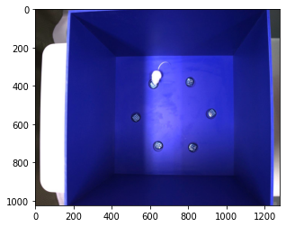

<!DOCTYPE html>

<html>
  <head>
    <meta charset="utf-8" />
    <meta name="viewport" content="width=device-width, initial-scale=1.0" />
    <title>Annolid on Detectron2 Tutorial 1 : Introduction to Detectron2 &#8212; Annolid Documentation</title>
    
  <link href="../_static/css/theme.css" rel="stylesheet">
  <link href="../_static/css/index.ff1ffe594081f20da1ef19478df9384b.css" rel="stylesheet">

    
  <link rel="stylesheet"
    href="../_static/vendor/fontawesome/5.13.0/css/all.min.css">
  <link rel="preload" as="font" type="font/woff2" crossorigin
    href="../_static/vendor/fontawesome/5.13.0/webfonts/fa-solid-900.woff2">
  <link rel="preload" as="font" type="font/woff2" crossorigin
    href="../_static/vendor/fontawesome/5.13.0/webfonts/fa-brands-400.woff2">

    
      

    
    <link rel="stylesheet" type="text/css" href="../_static/pygments.css" />
    <link rel="stylesheet" type="text/css" href="../_static/sphinx-book-theme.css?digest=c3fdc42140077d1ad13ad2f1588a4309" />
    <link rel="stylesheet" type="text/css" href="../_static/togglebutton.css" />
    <link rel="stylesheet" type="text/css" href="../_static/copybutton.css" />
    <link rel="stylesheet" type="text/css" href="../_static/mystnb.css" />
    <link rel="stylesheet" type="text/css" href="../_static/sphinx-thebe.css" />
    <link rel="stylesheet" type="text/css" href="../_static/panels-main.c949a650a448cc0ae9fd3441c0e17fb0.css" />
    <link rel="stylesheet" type="text/css" href="../_static/panels-variables.06eb56fa6e07937060861dad626602ad.css" />
    
  <link rel="preload" as="script" href="../_static/js/index.be7d3bbb2ef33a8344ce.js">

    <script data-url_root="../" id="documentation_options" src="../_static/documentation_options.js"></script>
    <script src="../_static/jquery.js"></script>
    <script src="../_static/underscore.js"></script>
    <script src="../_static/doctools.js"></script>
    <script src="../_static/clipboard.min.js"></script>
    <script src="../_static/copybutton.js"></script>
    <script>let toggleHintShow = 'Click to show';</script>
    <script>let toggleHintHide = 'Click to hide';</script>
    <script>let toggleOpenOnPrint = 'true';</script>
    <script src="../_static/togglebutton.js"></script>
    <script>var togglebuttonSelector = '.toggle, .admonition.dropdown, .tag_hide_input div.cell_input, .tag_hide-input div.cell_input, .tag_hide_output div.cell_output, .tag_hide-output div.cell_output, .tag_hide_cell.cell, .tag_hide-cell.cell';</script>
    <script src="../_static/sphinx-book-theme.d59cb220de22ca1c485ebbdc042f0030.js"></script>
    <script>const THEBE_JS_URL = "https://unpkg.com/thebe@0.8.2/lib/index.js"
const thebe_selector = ".thebe,.cell"
const thebe_selector_input = "pre"
const thebe_selector_output = ".output, .cell_output"
</script>
    <script async="async" src="../_static/sphinx-thebe.js"></script>
    <link rel="index" title="Index" href="../genindex.html" />
    <link rel="search" title="Search" href="../search.html" />
    <link rel="next" title="Annolid on Detectron2 Tutorial 2 : Train a Model" href="Annolid_on_Detectron2_Tutorial_2_Train_a_Model.html" />
    <link rel="prev" title="Tips and tricks" href="../content/tips_and_tricks.html" />
    <meta name="viewport" content="width=device-width, initial-scale=1" />
    <meta name="docsearch:language" content="None">
    

    <!-- Google Analytics -->
    
  </head>
  <body data-spy="scroll" data-target="#bd-toc-nav" data-offset="80">
    
    <div class="container-fluid" id="banner"></div>

    

    <div class="container-xl">
      <div class="row">
          
<div class="col-12 col-md-3 bd-sidebar site-navigation show" id="site-navigation">
    
        <div class="navbar-brand-box">
    <a class="navbar-brand text-wrap" href="../index.html">
      
        <!-- `logo` is deprecated in Sphinx 4.0, so remove this when we stop supporting 3 -->
        
      
      
      
      
      
      <h1 class="site-logo" id="site-title">Annolid Documentation</h1>
      
    </a>
</div><form class="bd-search d-flex align-items-center" action="../search.html" method="get">
  <i class="icon fas fa-search"></i>
  <input type="search" class="form-control" name="q" id="search-input" placeholder="Search this book..." aria-label="Search this book..." autocomplete="off" >
</form><nav class="bd-links" id="bd-docs-nav" aria-label="Main">
    <div class="bd-toc-item active">
        <ul class="nav bd-sidenav">
 <li class="toctree-l1">
  <a class="reference internal" href="../content/README.html">
   Annolid Documentation
  </a>
 </li>
</ul>
<p aria-level="2" class="caption" role="heading">
 <span class="caption-text">
  Getting Started
 </span>
</p>
<ul class="nav bd-sidenav">
 <li class="toctree-l1">
  <a class="reference internal" href="../content/introduction.html">
   Introduction
  </a>
 </li>
 <li class="toctree-l1">
  <a class="reference internal" href="../content/high_level_overview.html">
   High level overview
  </a>
 </li>
 <li class="toctree-l1">
  <a class="reference internal" href="../content/how_to_install.html">
   How to install
  </a>
 </li>
 <li class="toctree-l1">
  <a class="reference internal" href="../content/docker_container.html">
   Docker
  </a>
 </li>
 <li class="toctree-l1">
  <a class="reference internal" href="../content/gui_or_cli.html">
   GUI or CLI ?
  </a>
 </li>
 <li class="toctree-l1">
  <a class="reference internal" href="../content/extract_frames.html">
   Extract frames
  </a>
 </li>
 <li class="toctree-l1">
  <a class="reference internal" href="../content/labelling_images.html">
   How to label images
  </a>
 </li>
 <li class="toctree-l1">
  <a class="reference internal" href="../content/save_labels.html">
   Save Labels
  </a>
 </li>
 <li class="toctree-l1">
  <a class="reference internal" href="../content/create_coco.html">
   Create your COCO format dataset
  </a>
 </li>
 <li class="toctree-l1">
  <a class="reference internal" href="../content/tips_and_tricks.html">
   Tips and tricks
  </a>
 </li>
</ul>
<p aria-level="2" class="caption" role="heading">
 <span class="caption-text">
  Tutorials
 </span>
</p>
<ul class="current nav bd-sidenav">
 <li class="toctree-l1 current active">
  <a class="current reference internal" href="#">
   Annolid on Detectron2 Tutorial 1 : Introduction to Detectron2
  </a>
 </li>
 <li class="toctree-l1">
  <a class="reference internal" href="Annolid_on_Detectron2_Tutorial_2_Train_a_Model.html">
   Annolid on Detectron2 Tutorial 2 : Train a Model
  </a>
 </li>
 <li class="toctree-l1">
  <a class="reference internal" href="Annolid_on_Detectron2_Tutorial_3_Evaluate_our_model.html">
   Annolid on Detectron2 Tutorial 3 : Evaluating the model
  </a>
 </li>
 <li class="toctree-l1">
  <a class="reference internal" href="Annolid_on_Detectron2_Tutorial_4_Running_inference.html">
   Annolid on Detectron2 Tutorial 4 : Running inference
  </a>
 </li>
 <li class="toctree-l1">
  <a class="reference internal" href="Annolid_on_Detectron2_Tutorial_full.html">
   Annolid on Detectron2 Tutorial
  </a>
 </li>
</ul>
<p aria-level="2" class="caption" role="heading">
 <span class="caption-text">
  Annolid Zoo
 </span>
</p>
<ul class="nav bd-sidenav">
 <li class="toctree-l1">
  <a class="reference internal" href="../content/annolid_zoo.html">
   Annolid ModelZoo
  </a>
 </li>
</ul>
<p aria-level="2" class="caption" role="heading">
 <span class="caption-text">
  Community
 </span>
</p>
<ul class="nav bd-sidenav">
 <li class="toctree-l1">
  <a class="reference internal" href="../content/contributing.html">
   New contributor guide
  </a>
 </li>
 <li class="toctree-l1">
  <a class="reference internal" href="../content/get_in_touch.html">
   Get in touch
  </a>
 </li>
 <li class="toctree-l1">
  <a class="reference internal" href="../content/licence.html">
   Licence
  </a>
 </li>
 <li class="toctree-l1">
  <a class="reference internal" href="../content/cite_annolid.html">
   Cite Annolid
  </a>
 </li>
 <li class="toctree-l1">
  <a class="reference internal" href="../content/work_based_on_annolid.html">
   Work based on annolid
  </a>
 </li>
</ul>

    </div>
</nav> <!-- To handle the deprecated key -->

<div class="navbar_extra_footer">
  Powered by <a href="https://jupyterbook.org">Jupyter Book</a>
</div>

</div>


          


          
<main class="col py-md-3 pl-md-4 bd-content overflow-auto" role="main">
    
    <div class="topbar container-xl fixed-top">
    <div class="topbar-contents row">
        <div class="col-12 col-md-3 bd-topbar-whitespace site-navigation show"></div>
        <div class="col pl-md-4 topbar-main">
            
            <button id="navbar-toggler" class="navbar-toggler ml-0" type="button" data-toggle="collapse"
                data-toggle="tooltip" data-placement="bottom" data-target=".site-navigation" aria-controls="navbar-menu"
                aria-expanded="true" aria-label="Toggle navigation" aria-controls="site-navigation"
                title="Toggle navigation" data-toggle="tooltip" data-placement="left">
                <i class="fas fa-bars"></i>
                <i class="fas fa-arrow-left"></i>
                <i class="fas fa-arrow-up"></i>
            </button>
            
            
<div class="dropdown-buttons-trigger">
    <button id="dropdown-buttons-trigger" class="btn btn-secondary topbarbtn" aria-label="Download this page"><i
            class="fas fa-download"></i></button>

    <div class="dropdown-buttons">
        <!-- ipynb file if we had a myst markdown file -->
        
        <!-- Download raw file -->
        <a class="dropdown-buttons" href="../_sources/tutorials/Annolid_on_Detectron2_Tutorial_1_Introduction_to_Detectron2.ipynb"><button type="button"
                class="btn btn-secondary topbarbtn" title="Download source file" data-toggle="tooltip"
                data-placement="left">.ipynb</button></a>
        <!-- Download PDF via print -->
        <button type="button" id="download-print" class="btn btn-secondary topbarbtn" title="Print to PDF"
                onclick="printPdf(this)" data-toggle="tooltip" data-placement="left">.pdf</button>
    </div>
</div>

            <!-- Source interaction buttons -->

<div class="dropdown-buttons-trigger">
    <button id="dropdown-buttons-trigger" class="btn btn-secondary topbarbtn"
        aria-label="Connect with source repository"><i class="fab fa-github"></i></button>
    <div class="dropdown-buttons sourcebuttons">
        <a class="repository-button"
            href="https://github.com/healthonrails/annolid/"><button type="button" class="btn btn-secondary topbarbtn"
                data-toggle="tooltip" data-placement="left" title="Source repository"><i
                    class="fab fa-github"></i>repository</button></a>
        <a class="issues-button"
            href="https://github.com/healthonrails/annolid//issues/new?title=Issue%20on%20page%20%2Ftutorials/Annolid_on_Detectron2_Tutorial_1_Introduction_to_Detectron2.html&body=Your%20issue%20content%20here."><button
                type="button" class="btn btn-secondary topbarbtn" data-toggle="tooltip" data-placement="left"
                title="Open an issue"><i class="fas fa-lightbulb"></i>open issue</button></a>
        
    </div>
</div>

            <!-- Full screen (wrap in <a> to have style consistency -->

<a class="full-screen-button"><button type="button" class="btn btn-secondary topbarbtn" data-toggle="tooltip"
        data-placement="bottom" onclick="toggleFullScreen()" aria-label="Fullscreen mode"
        title="Fullscreen mode"><i
            class="fas fa-expand"></i></button></a>

            <!-- Launch buttons -->

<div class="dropdown-buttons-trigger">
    <button id="dropdown-buttons-trigger" class="btn btn-secondary topbarbtn"
        aria-label="Launch interactive content"><i class="fas fa-rocket"></i></button>
    <div class="dropdown-buttons">
        
        <a class="binder-button" href="https://mybinder.org/v2/gh/healthonrails/annolid/master?urlpath=tree/book/tutorials/Annolid_on_Detectron2_Tutorial_1_Introduction_to_Detectron2.ipynb"><button type="button"
                class="btn btn-secondary topbarbtn" title="Launch Binder" data-toggle="tooltip"
                data-placement="left">Binder</button></a>
        
        
        
        
    </div>
</div>

        </div>

        <!-- Table of contents -->
        <div class="d-none d-md-block col-md-2 bd-toc show noprint">
            
            <div class="tocsection onthispage pt-5 pb-3">
                <i class="fas fa-list"></i> Contents
            </div>
            <nav id="bd-toc-nav" aria-label="Page">
                <ul class="visible nav section-nav flex-column">
 <li class="toc-h1 nav-item toc-entry">
  <a class="reference internal nav-link" href="#">
   Annolid on Detectron2 Tutorial 1 : Introduction to Detectron2
  </a>
 </li>
 <li class="toc-h1 nav-item toc-entry">
  <a class="reference internal nav-link" href="#install-detectron2">
   Install detectron2
  </a>
  <ul class="visible nav section-nav flex-column">
   <li class="toc-h2 nav-item toc-entry">
    <a class="reference internal nav-link" href="#upload-a-labeled-dataset">
     Upload a labeled dataset.
    </a>
    <ul class="nav section-nav flex-column">
     <li class="toc-h3 nav-item toc-entry">
      <a class="reference internal nav-link" href="#note1-if-you-want-to-use-your-own-dataset-instead-of-the-demo-one-please-uncomment-and-edit-the-following-code">
       Note1: If you want to use your own dataset instead of the demo one, please uncomment and edit the following code.
      </a>
     </li>
     <li class="toc-h3 nav-item toc-entry">
      <a class="reference internal nav-link" href="#note2-please-make-sure-there-is-no-white-space-in-your-file-path-if-you-encounter-file-not-found-issues">
       Note2: please make sure there is no white space in your file path if you encounter file not found issues.
      </a>
     </li>
    </ul>
   </li>
  </ul>
 </li>
 <li class="toc-h1 nav-item toc-entry">
  <a class="reference internal nav-link" href="#run-a-pre-trained-detectron2-model">
   Run a pre-trained detectron2 model
  </a>
 </li>
</ul>

            </nav>
        </div>
    </div>
</div>
    <div id="main-content" class="row">
        <div class="col-12 col-md-9 pl-md-3 pr-md-0">
            <!-- Table of contents that is only displayed when printing the page -->
            <div id="jb-print-docs-body" class="onlyprint">
                <h1>Annolid on Detectron2 Tutorial 1 : Introduction to Detectron2</h1>
                <!-- Table of contents -->
                <div id="print-main-content">
                    <div id="jb-print-toc">
                        
                        <div>
                            <h2> Contents </h2>
                        </div>
                        <nav aria-label="Page">
                            <ul class="visible nav section-nav flex-column">
 <li class="toc-h1 nav-item toc-entry">
  <a class="reference internal nav-link" href="#">
   Annolid on Detectron2 Tutorial 1 : Introduction to Detectron2
  </a>
 </li>
 <li class="toc-h1 nav-item toc-entry">
  <a class="reference internal nav-link" href="#install-detectron2">
   Install detectron2
  </a>
  <ul class="visible nav section-nav flex-column">
   <li class="toc-h2 nav-item toc-entry">
    <a class="reference internal nav-link" href="#upload-a-labeled-dataset">
     Upload a labeled dataset.
    </a>
    <ul class="nav section-nav flex-column">
     <li class="toc-h3 nav-item toc-entry">
      <a class="reference internal nav-link" href="#note1-if-you-want-to-use-your-own-dataset-instead-of-the-demo-one-please-uncomment-and-edit-the-following-code">
       Note1: If you want to use your own dataset instead of the demo one, please uncomment and edit the following code.
      </a>
     </li>
     <li class="toc-h3 nav-item toc-entry">
      <a class="reference internal nav-link" href="#note2-please-make-sure-there-is-no-white-space-in-your-file-path-if-you-encounter-file-not-found-issues">
       Note2: please make sure there is no white space in your file path if you encounter file not found issues.
      </a>
     </li>
    </ul>
   </li>
  </ul>
 </li>
 <li class="toc-h1 nav-item toc-entry">
  <a class="reference internal nav-link" href="#run-a-pre-trained-detectron2-model">
   Run a pre-trained detectron2 model
  </a>
 </li>
</ul>

                        </nav>
                    </div>
                </div>
            </div>
            
              <div>
                
  <p><a href="https://colab.research.google.com/github/healthonrails/annolid/blob/main/docs/tutorials/Annolid_on_Detectron2_Tutorial.ipynb" target="_blank"></a></p>
<div class="tex2jax_ignore mathjax_ignore section" id="annolid-on-detectron2-tutorial-1-introduction-to-detectron2">
<h1>Annolid on Detectron2 Tutorial 1 : Introduction to Detectron2<a class="headerlink" href="#annolid-on-detectron2-tutorial-1-introduction-to-detectron2" title="Permalink to this headline">¶</a></h1>

<p>Welcome to Annolid on detectron2! This is modified from the official colab tutorial of detectron2. Here, we will go through some basics usage of detectron2, including the following:</p>
<ul class="simple">
<li><p>Run inference on images or videos, with an existing detectron2 model</p></li>
<li><p>Train a detectron2 model on a new dataset</p></li>
</ul>
<p>You can make a copy of this tutorial by “File -&gt; Open in playground mode” and play with it yourself. <strong>DO NOT</strong> request access to this tutorial.</p>
</div>
<div class="tex2jax_ignore mathjax_ignore section" id="install-detectron2">
<h1>Install detectron2<a class="headerlink" href="#install-detectron2" title="Permalink to this headline">¶</a></h1>
<div class="cell docutils container">
<div class="cell_input docutils container">
<div class="highlight-ipython3 notranslate"><div class="highlight"><pre><span></span><span class="c1"># Is running in colab or in jupyter-notebook</span>
<span class="k">try</span><span class="p">:</span>
  <span class="kn">import</span> <span class="nn">google.colab</span>
  <span class="n">IN_COLAB</span> <span class="o">=</span> <span class="kc">True</span>
<span class="k">except</span><span class="p">:</span>
  <span class="n">IN_COLAB</span> <span class="o">=</span> <span class="kc">False</span>
</pre></div>
</div>
</div>
</div>
<div class="cell docutils container">
<div class="cell_input docutils container">
<div class="highlight-ipython3 notranslate"><div class="highlight"><pre><span></span><span class="c1"># install dependencies: </span>
<span class="o">!</span>pip install <span class="nv">pyyaml</span><span class="o">==</span><span class="m">5</span>.3
<span class="kn">import</span> <span class="nn">torch</span><span class="o">,</span> <span class="nn">torchvision</span>
<span class="n">TORCH_VERSION</span> <span class="o">=</span> <span class="s2">&quot;.&quot;</span><span class="o">.</span><span class="n">join</span><span class="p">(</span><span class="n">torch</span><span class="o">.</span><span class="n">__version__</span><span class="o">.</span><span class="n">split</span><span class="p">(</span><span class="s2">&quot;.&quot;</span><span class="p">)[:</span><span class="mi">2</span><span class="p">])</span>
<span class="n">CUDA_VERSION</span> <span class="o">=</span> <span class="n">torch</span><span class="o">.</span><span class="n">__version__</span><span class="o">.</span><span class="n">split</span><span class="p">(</span><span class="s2">&quot;+&quot;</span><span class="p">)[</span><span class="o">-</span><span class="mi">1</span><span class="p">]</span>
<span class="nb">print</span><span class="p">(</span><span class="s2">&quot;torch: &quot;</span><span class="p">,</span> <span class="n">TORCH_VERSION</span><span class="p">,</span> <span class="s2">&quot;; cuda: &quot;</span><span class="p">,</span> <span class="n">CUDA_VERSION</span><span class="p">)</span>
<span class="c1"># Install detectron2 that matches the above pytorch version</span>
<span class="c1"># See https://detectron2.readthedocs.io/tutorials/install.html for instructions</span>
<span class="o">!</span>pip install detectron2 -f https://dl.fbaipublicfiles.com/detectron2/wheels/<span class="nv">$CUDA_VERSION</span>/torch<span class="nv">$TORCH_VERSION</span>/index.html
<span class="c1"># If there is not yet a detectron2 release that matches the given torch + CUDA version, you need to install a different pytorch.</span>

<span class="c1"># exit(0)  # After installation, you may need to &quot;restart runtime&quot; in Colab. This line can also restart runtime</span>
</pre></div>
</div>
</div>
<div class="cell_output docutils container">
<div class="output stream highlight-myst-ansi notranslate"><div class="highlight"><pre><span></span>Defaulting to user installation because normal site-packages is not writeable
</pre></div>
</div>
<div class="output stream highlight-myst-ansi notranslate"><div class="highlight"><pre><span></span>Requirement already satisfied: pyyaml==5.3 in /usr/local/lib/python3.8/dist-packages (5.3)
</pre></div>
</div>
<div class="output stream highlight-myst-ansi notranslate"><div class="highlight"><pre><span></span><span class=" -Color -Color-Yellow">WARNING: You are using pip version 22.0.3; however, version 22.0.4 is available.</span>
<span class=" -Color -Color-Yellow">You should consider upgrading via the &#39;/usr/bin/python3 -m pip install --upgrade pip&#39; command.</span>

</pre></div>
</div>
<div class="output stream highlight-myst-ansi notranslate"><div class="highlight"><pre><span></span>torch:  1.10 ; cuda:  cu102
</pre></div>
</div>
<div class="output stream highlight-myst-ansi notranslate"><div class="highlight"><pre><span></span>Defaulting to user installation because normal site-packages is not writeable
</pre></div>
</div>
<div class="output stream highlight-myst-ansi notranslate"><div class="highlight"><pre><span></span>Looking in links: https://dl.fbaipublicfiles.com/detectron2/wheels/cu102/torch1.10/index.html
</pre></div>
</div>
<div class="output stream highlight-myst-ansi notranslate"><div class="highlight"><pre><span></span><span class=" -Color -Color-Bold -Color-Bold-Yellow">warning</span>: <span class=" -Color -Color-Bold">missing-index-doctype</span>

<span class=" -Color -Color-Yellow">×</span> The package index page being used does not have a proper HTML doctype declaration.
<span class=" -Color -Color-Yellow">╰─&gt;</span> Problematic URL: https://dl.fbaipublicfiles.com/detectron2/wheels/cu102/torch1.10/index.html

<span class=" -Color -Color-Bold -Color-Bold-Magenta">note</span>: This is an issue with the page at the URL mentioned above.
<span class=" -Color -Color-Bold -Color-Bold-Cyan">hint</span>: You might need to reach out to the owner of that package index, to get this fixed. See https://github.com/pypa/pip/issues/10825 for context.
</pre></div>
</div>
<div class="output stream highlight-myst-ansi notranslate"><div class="highlight"><pre><span></span>Collecting detectron2
</pre></div>
</div>
<div class="output stream highlight-myst-ansi notranslate"><div class="highlight"><pre><span></span>  Downloading https://dl.fbaipublicfiles.com/detectron2/wheels/cu102/torch1.10/detectron2-0.6%2Bcu102-cp38-cp38-linux_x86_64.whl (6.6 MB)
?25l     <span class=" -Color -Color-C237">━━━━━━━━━━━━━━━━━━━━━━━━━━━━━━━━━━━━━━━━</span> <span class=" -Color -Color-Green">0.0/6.6 MB</span> <span class=" -Color -Color-Red">?</span> eta <span class=" -Color -Color-Cyan">-:--:--</span>
</pre></div>
</div>
<div class="output stream highlight-myst-ansi notranslate"><div class="highlight"><pre><span></span>     <span class=" -Color -Color-C237">━━━━━━━━━━━━━━━━━━━━━━━━━━━━━━━━━━━━━━━━</span> <span class=" -Color -Color-Green">0.0/6.6 MB</span> <span class=" -Color -Color-Red">?</span> eta <span class=" -Color -Color-Cyan">-:--:--</span>
</pre></div>
</div>
<div class="output stream highlight-myst-ansi notranslate"><div class="highlight"><pre><span></span>     <span class=" -Color -Color-C237">━━━━━━━━━━━━━━━━━━━━━━━━━━━━━━━━━━━━━━━━</span> <span class=" -Color -Color-Green">0.1/6.6 MB</span> <span class=" -Color -Color-Red">46.9 MB/s</span> eta <span class=" -Color -Color-Cyan">0:00:01</span>
     <span class=" -Color -Color-C237">━━━━━━━━━━━━━━━━━━━━━━━━━━━━━━━━━━━━━━━━</span> <span class=" -Color -Color-Green">0.1/6.6 MB</span> <span class=" -Color -Color-Red">46.9 MB/s</span> eta <span class=" -Color -Color-Cyan">0:00:01</span>
</pre></div>
</div>
<div class="output stream highlight-myst-ansi notranslate"><div class="highlight"><pre><span></span>     ╸<span class=" -Color -Color-C237">━━━━━━━━━━━━━━━━━━━━━━━━━━━━━━━━━━━━━━━</span> <span class=" -Color -Color-Green">0.1/6.6 MB</span> <span class=" -Color -Color-Red">1.7 MB/s</span> eta <span class=" -Color -Color-Cyan">0:00:04</span>
</pre></div>
</div>
<div class="output stream highlight-myst-ansi notranslate"><div class="highlight"><pre><span></span>     ╸<span class=" -Color -Color-C237">━━━━━━━━━━━━━━━━━━━━━━━━━━━━━━━━━━━━━━━</span> <span class=" -Color -Color-Green">0.1/6.6 MB</span> <span class=" -Color -Color-Red">1.7 MB/s</span> eta <span class=" -Color -Color-Cyan">0:00:04</span>
     ━╸<span class=" -Color -Color-C237">━━━━━━━━━━━━━━━━━━━━━━━━━━━━━━━━━━━━━━</span> <span class=" -Color -Color-Green">0.3/6.6 MB</span> <span class=" -Color -Color-Red">1.9 MB/s</span> eta <span class=" -Color -Color-Cyan">0:00:04</span>
</pre></div>
</div>
<div class="output stream highlight-myst-ansi notranslate"><div class="highlight"><pre><span></span>     ━━━━<span class=" -Color -Color-C237">╺━━━━━━━━━━━━━━━━━━━━━━━━━━━━━━━━━━━</span> <span class=" -Color -Color-Green">0.7/6.6 MB</span> <span class=" -Color -Color-Red">3.3 MB/s</span> eta <span class=" -Color -Color-Cyan">0:00:02</span>
</pre></div>
</div>
<div class="output stream highlight-myst-ansi notranslate"><div class="highlight"><pre><span></span>     ━━━━<span class=" -Color -Color-C237">╺━━━━━━━━━━━━━━━━━━━━━━━━━━━━━━━━━━━</span> <span class=" -Color -Color-Green">0.7/6.6 MB</span> <span class=" -Color -Color-Red">3.3 MB/s</span> eta <span class=" -Color -Color-Cyan">0:00:02</span>
</pre></div>
</div>
<div class="output stream highlight-myst-ansi notranslate"><div class="highlight"><pre><span></span>     ━━━━━━╸<span class=" -Color -Color-C237">━━━━━━━━━━━━━━━━━━━━━━━━━━━━━━━━━</span> <span class=" -Color -Color-Green">1.1/6.6 MB</span> <span class=" -Color -Color-Red">4.0 MB/s</span> eta <span class=" -Color -Color-Cyan">0:00:02</span>
     ━━━━━━━━<span class=" -Color -Color-C237">╺━━━━━━━━━━━━━━━━━━━━━━━━━━━━━━━</span> <span class=" -Color -Color-Green">1.4/6.6 MB</span> <span class=" -Color -Color-Red">4.9 MB/s</span> eta <span class=" -Color -Color-Cyan">0:00:02</span>
</pre></div>
</div>
<div class="output stream highlight-myst-ansi notranslate"><div class="highlight"><pre><span></span>     ━━━━━━━━━━━━━━━━╸<span class=" -Color -Color-C237">━━━━━━━━━━━━━━━━━━━━━━━</span> <span class=" -Color -Color-Green">2.7/6.6 MB</span> <span class=" -Color -Color-Red">8.2 MB/s</span> eta <span class=" -Color -Color-Cyan">0:00:01</span>
</pre></div>
</div>
<div class="output stream highlight-myst-ansi notranslate"><div class="highlight"><pre><span></span>     ━━━━━━━━━━━━━━━━╸<span class=" -Color -Color-C237">━━━━━━━━━━━━━━━━━━━━━━━</span> <span class=" -Color -Color-Green">2.8/6.6 MB</span> <span class=" -Color -Color-Red">7.2 MB/s</span> eta <span class=" -Color -Color-Cyan">0:00:01</span>
     ━━━━━━━━━━━━━━━━━━━━━━━━━━━━━━━━━╸<span class=" -Color -Color-C237">━━━━━━</span> <span class=" -Color -Color-Green">5.5/6.6 MB</span> <span class=" -Color -Color-Red">13.4 MB/s</span> eta <span class=" -Color -Color-Cyan">0:00:01</span>
</pre></div>
</div>
<div class="output stream highlight-myst-ansi notranslate"><div class="highlight"><pre><span></span>     ━━━━━━━━━━━━━━━━━━━━━━━━━━━━━━━━━━━━━<span class=" -Color -Color-C237">╺━━</span> <span class=" -Color -Color-Green">6.1/6.6 MB</span> <span class=" -Color -Color-Red">13.4 MB/s</span> eta <span class=" -Color -Color-Cyan">0:00:01</span>
</pre></div>
</div>
<div class="output stream highlight-myst-ansi notranslate"><div class="highlight"><pre><span></span>     ━━━━━━━━━━━━━━━━━━━━━━━━━━━━━━━━━━━━━━━╸ <span class=" -Color -Color-Green">6.5/6.6 MB</span> <span class=" -Color -Color-Red">13.8 MB/s</span> eta <span class=" -Color -Color-Cyan">0:00:01</span>
     <span class=" -Color -Color-Red">━━━━━━━━━━━━━━━━━━━━━━━━━━━━━━━━━━━━━━━━</span> <span class=" -Color -Color-Green">6.6/6.6 MB</span> <span class=" -Color -Color-Red">12.8 MB/s</span> eta <span class=" -Color -Color-Cyan">0:00:00</span>
?25h
</pre></div>
</div>
<div class="output stream highlight-myst-ansi notranslate"><div class="highlight"><pre><span></span>Collecting pycocotools&gt;=2.0.2
  Using cached pycocotools-2.0.4.tar.gz (106 kB)
</pre></div>
</div>
<div class="output stream highlight-myst-ansi notranslate"><div class="highlight"><pre><span></span>  Installing build dependencies ... ?25l-
</pre></div>
</div>
<div class="output stream highlight-myst-ansi notranslate"><div class="highlight"><pre><span></span> \
</pre></div>
</div>
<div class="output stream highlight-myst-ansi notranslate"><div class="highlight"><pre><span></span> |
</pre></div>
</div>
<div class="output stream highlight-myst-ansi notranslate"><div class="highlight"><pre><span></span> /
</pre></div>
</div>
<div class="output stream highlight-myst-ansi notranslate"><div class="highlight"><pre><span></span> -
</pre></div>
</div>
<div class="output stream highlight-myst-ansi notranslate"><div class="highlight"><pre><span></span> \
</pre></div>
</div>
<div class="output stream highlight-myst-ansi notranslate"><div class="highlight"><pre><span></span> |
</pre></div>
</div>
<div class="output stream highlight-myst-ansi notranslate"><div class="highlight"><pre><span></span> /
</pre></div>
</div>
<div class="output stream highlight-myst-ansi notranslate"><div class="highlight"><pre><span></span> -
</pre></div>
</div>
<div class="output stream highlight-myst-ansi notranslate"><div class="highlight"><pre><span></span> \
</pre></div>
</div>
<div class="output stream highlight-myst-ansi notranslate"><div class="highlight"><pre><span></span> |
</pre></div>
</div>
<div class="output stream highlight-myst-ansi notranslate"><div class="highlight"><pre><span></span> done
</pre></div>
</div>
<div class="output stream highlight-myst-ansi notranslate"><div class="highlight"><pre><span></span>?25h  Getting requirements to build wheel ... ?25l-
</pre></div>
</div>
<div class="output stream highlight-myst-ansi notranslate"><div class="highlight"><pre><span></span> \
</pre></div>
</div>
<div class="output stream highlight-myst-ansi notranslate"><div class="highlight"><pre><span></span> | done
</pre></div>
</div>
<div class="output stream highlight-myst-ansi notranslate"><div class="highlight"><pre><span></span>?25h  Preparing metadata (pyproject.toml) ... ?25l-
</pre></div>
</div>
<div class="output stream highlight-myst-ansi notranslate"><div class="highlight"><pre><span></span> \
</pre></div>
</div>
<div class="output stream highlight-myst-ansi notranslate"><div class="highlight"><pre><span></span> |
</pre></div>
</div>
<div class="output stream highlight-myst-ansi notranslate"><div class="highlight"><pre><span></span> done
</pre></div>
</div>
<div class="output stream highlight-myst-ansi notranslate"><div class="highlight"><pre><span></span>?25hRequirement already satisfied: tensorboard in /home/jeremy/.local/lib/python3.8/site-packages (from detectron2) (2.8.0)
</pre></div>
</div>
<div class="output stream highlight-myst-ansi notranslate"><div class="highlight"><pre><span></span>Collecting omegaconf&gt;=2.1
</pre></div>
</div>
<div class="output stream highlight-myst-ansi notranslate"><div class="highlight"><pre><span></span>  Downloading omegaconf-2.1.2-py3-none-any.whl (74 kB)
?25l     <span class=" -Color -Color-C237">━━━━━━━━━━━━━━━━━━━━━━━━━━━━━━━━━━━━━━━━</span> <span class=" -Color -Color-Green">0.0/74.7 KB</span> <span class=" -Color -Color-Red">?</span> eta <span class=" -Color -Color-Cyan">-:--:--</span>
     <span class=" -Color -Color-Red">━━━━━━━━━━━━━━━━━━━━━━━━━━━━━━━━━━━━━━━━</span> <span class=" -Color -Color-Green">74.7/74.7 KB</span> <span class=" -Color -Color-Red">3.6 MB/s</span> eta <span class=" -Color -Color-Cyan">0:00:00</span>
?25h
</pre></div>
</div>
<div class="output stream highlight-myst-ansi notranslate"><div class="highlight"><pre><span></span>Collecting tabulate
  Using cached tabulate-0.8.9-py3-none-any.whl (25 kB)
Requirement already satisfied: matplotlib in /home/jeremy/.local/lib/python3.8/site-packages (from detectron2) (3.5.1)
Requirement already satisfied: termcolor&gt;=1.1 in /home/jeremy/.local/lib/python3.8/site-packages (from detectron2) (1.1.0)
</pre></div>
</div>
<div class="output stream highlight-myst-ansi notranslate"><div class="highlight"><pre><span></span>Collecting pydot
  Using cached pydot-1.4.2-py2.py3-none-any.whl (21 kB)
</pre></div>
</div>
<div class="output stream highlight-myst-ansi notranslate"><div class="highlight"><pre><span></span>Collecting Pillow&gt;=7.1
  Downloading Pillow-9.1.0-cp38-cp38-manylinux_2_17_x86_64.manylinux2014_x86_64.whl (4.3 MB)
?25l     <span class=" -Color -Color-C237">━━━━━━━━━━━━━━━━━━━━━━━━━━━━━━━━━━━━━━━━</span> <span class=" -Color -Color-Green">0.0/4.3 MB</span> <span class=" -Color -Color-Red">?</span> eta <span class=" -Color -Color-Cyan">-:--:--</span>
</pre></div>
</div>
<div class="output stream highlight-myst-ansi notranslate"><div class="highlight"><pre><span></span>     ━━━━━━━━━━━━━╸<span class=" -Color -Color-C237">━━━━━━━━━━━━━━━━━━━━━━━━━━</span> <span class=" -Color -Color-Green">1.5/4.3 MB</span> <span class=" -Color -Color-Red">47.8 MB/s</span> eta <span class=" -Color -Color-Cyan">0:00:01</span>
</pre></div>
</div>
<div class="output stream highlight-myst-ansi notranslate"><div class="highlight"><pre><span></span>     ━━━━━━━━━━━━━━━━━━━━━━━━━━━━━━━━━━━━━━━╸ <span class=" -Color -Color-Green">4.3/4.3 MB</span> <span class=" -Color -Color-Red">71.5 MB/s</span> eta <span class=" -Color -Color-Cyan">0:00:01</span>
     <span class=" -Color -Color-Red">━━━━━━━━━━━━━━━━━━━━━━━━━━━━━━━━━━━━━━━━</span> <span class=" -Color -Color-Green">4.3/4.3 MB</span> <span class=" -Color -Color-Red">55.6 MB/s</span> eta <span class=" -Color -Color-Cyan">0:00:00</span>
?25h
</pre></div>
</div>
<div class="output stream highlight-myst-ansi notranslate"><div class="highlight"><pre><span></span>Collecting fvcore&lt;0.1.6,&gt;=0.1.5
  Downloading fvcore-0.1.5.post20220414.tar.gz (50 kB)
?25l     <span class=" -Color -Color-C237">━━━━━━━━━━━━━━━━━━━━━━━━━━━━━━━━━━━━━━━━</span> <span class=" -Color -Color-Green">0.0/50.0 KB</span> <span class=" -Color -Color-Red">?</span> eta <span class=" -Color -Color-Cyan">-:--:--</span>
     <span class=" -Color -Color-Red">━━━━━━━━━━━━━━━━━━━━━━━━━━━━━━━━━━━━━━━━</span> <span class=" -Color -Color-Green">50.0/50.0 KB</span> <span class=" -Color -Color-Red">7.9 MB/s</span> eta <span class=" -Color -Color-Cyan">0:00:00</span>
?25h
</pre></div>
</div>
<div class="output stream highlight-myst-ansi notranslate"><div class="highlight"><pre><span></span>  Preparing metadata (setup.py) ... ?25l-
</pre></div>
</div>
<div class="output stream highlight-myst-ansi notranslate"><div class="highlight"><pre><span></span> done
</pre></div>
</div>
<div class="output stream highlight-myst-ansi notranslate"><div class="highlight"><pre><span></span>?25hCollecting cloudpickle
  Using cached cloudpickle-2.0.0-py3-none-any.whl (25 kB)
Requirement already satisfied: tqdm&gt;4.29.0 in /home/jeremy/.local/lib/python3.8/site-packages (from detectron2) (4.63.0)
</pre></div>
</div>
<div class="output stream highlight-myst-ansi notranslate"><div class="highlight"><pre><span></span>Collecting black==21.4b2
  Using cached black-21.4b2-py3-none-any.whl (130 kB)
</pre></div>
</div>
<div class="output stream highlight-myst-ansi notranslate"><div class="highlight"><pre><span></span>Collecting yacs&gt;=0.1.8
  Using cached yacs-0.1.8-py3-none-any.whl (14 kB)
Requirement already satisfied: future in /usr/lib/python3/dist-packages (from detectron2) (0.18.2)
</pre></div>
</div>
<div class="output stream highlight-myst-ansi notranslate"><div class="highlight"><pre><span></span>Collecting hydra-core&gt;=1.1
</pre></div>
</div>
<div class="output stream highlight-myst-ansi notranslate"><div class="highlight"><pre><span></span>  Downloading hydra_core-1.1.2-py3-none-any.whl (147 kB)
?25l     <span class=" -Color -Color-C237">━━━━━━━━━━━━━━━━━━━━━━━━━━━━━━━━━━━━━━━━</span> <span class=" -Color -Color-Green">0.0/147.4 KB</span> <span class=" -Color -Color-Red">?</span> eta <span class=" -Color -Color-Cyan">-:--:--</span>
     <span class=" -Color -Color-Red">━━━━━━━━━━━━━━━━━━━━━━━━━━━━━━━━━━━━━━</span> <span class=" -Color -Color-Green">147.4/147.4 KB</span> <span class=" -Color -Color-Red">21.0 MB/s</span> eta <span class=" -Color -Color-Cyan">0:00:00</span>
?25h
</pre></div>
</div>
<div class="output stream highlight-myst-ansi notranslate"><div class="highlight"><pre><span></span>Collecting iopath&lt;0.1.10,&gt;=0.1.7
  Using cached iopath-0.1.9-py3-none-any.whl (27 kB)
Requirement already satisfied: appdirs in /home/jeremy/.local/lib/python3.8/site-packages (from black==21.4b2-&gt;detectron2) (1.4.4)
Requirement already satisfied: click&gt;=7.1.2 in /home/jeremy/.local/lib/python3.8/site-packages (from black==21.4b2-&gt;detectron2) (8.0.3)
</pre></div>
</div>
<div class="output stream highlight-myst-ansi notranslate"><div class="highlight"><pre><span></span>Collecting toml&gt;=0.10.1
  Using cached toml-0.10.2-py2.py3-none-any.whl (16 kB)
</pre></div>
</div>
<div class="output stream highlight-myst-ansi notranslate"><div class="highlight"><pre><span></span>Collecting regex&gt;=2020.1.8
</pre></div>
</div>
<div class="output stream highlight-myst-ansi notranslate"><div class="highlight"><pre><span></span>  Downloading regex-2022.4.24-cp38-cp38-manylinux_2_17_x86_64.manylinux2014_x86_64.whl (764 kB)
?25l     <span class=" -Color -Color-C237">━━━━━━━━━━━━━━━━━━━━━━━━━━━━━━━━━━━━━━━━</span> <span class=" -Color -Color-Green">0.0/764.9 KB</span> <span class=" -Color -Color-Red">?</span> eta <span class=" -Color -Color-Cyan">-:--:--</span>
</pre></div>
</div>
<div class="output stream highlight-myst-ansi notranslate"><div class="highlight"><pre><span></span>     <span class=" -Color -Color-Red">━━━━━━━━━━━━━━━━━━━━━━━━━━━━━━━━━━━━━━</span> <span class=" -Color -Color-Green">764.9/764.9 KB</span> <span class=" -Color -Color-Red">60.7 MB/s</span> eta <span class=" -Color -Color-Cyan">0:00:00</span>
?25hRequirement already satisfied: mypy-extensions&gt;=0.4.3 in /home/jeremy/.local/lib/python3.8/site-packages (from black==21.4b2-&gt;detectron2) (0.4.3)
Requirement already satisfied: pathspec&lt;1,&gt;=0.8.1 in /home/jeremy/.local/lib/python3.8/site-packages (from black==21.4b2-&gt;detectron2) (0.9.0)
Requirement already satisfied: numpy in /home/jeremy/.local/lib/python3.8/site-packages (from fvcore&lt;0.1.6,&gt;=0.1.5-&gt;detectron2) (1.22.2)
Requirement already satisfied: pyyaml&gt;=5.1 in /usr/local/lib/python3.8/dist-packages (from fvcore&lt;0.1.6,&gt;=0.1.5-&gt;detectron2) (5.3)
</pre></div>
</div>
<div class="output stream highlight-myst-ansi notranslate"><div class="highlight"><pre><span></span>Collecting antlr4-python3-runtime==4.8
  Using cached antlr4-python3-runtime-4.8.tar.gz (112 kB)
</pre></div>
</div>
<div class="output stream highlight-myst-ansi notranslate"><div class="highlight"><pre><span></span>  Preparing metadata (setup.py) ... ?25l-
</pre></div>
</div>
<div class="output stream highlight-myst-ansi notranslate"><div class="highlight"><pre><span></span> done
</pre></div>
</div>
<div class="output stream highlight-myst-ansi notranslate"><div class="highlight"><pre><span></span>?25hCollecting importlib-resources&lt;5.3
</pre></div>
</div>
<div class="output stream highlight-myst-ansi notranslate"><div class="highlight"><pre><span></span>  Downloading importlib_resources-5.2.3-py3-none-any.whl (27 kB)
</pre></div>
</div>
<div class="output stream highlight-myst-ansi notranslate"><div class="highlight"><pre><span></span>Collecting portalocker
  Downloading portalocker-2.4.0-py2.py3-none-any.whl (16 kB)
</pre></div>
</div>
<div class="output stream highlight-myst-ansi notranslate"><div class="highlight"><pre><span></span>Requirement already satisfied: kiwisolver&gt;=1.0.1 in /home/jeremy/.local/lib/python3.8/site-packages (from matplotlib-&gt;detectron2) (1.3.2)
Requirement already satisfied: fonttools&gt;=4.22.0 in /home/jeremy/.local/lib/python3.8/site-packages (from matplotlib-&gt;detectron2) (4.29.1)
Requirement already satisfied: python-dateutil&gt;=2.7 in /home/jeremy/.local/lib/python3.8/site-packages (from matplotlib-&gt;detectron2) (2.8.2)
Requirement already satisfied: pyparsing&gt;=2.2.1 in /home/jeremy/.local/lib/python3.8/site-packages (from matplotlib-&gt;detectron2) (3.0.7)
Requirement already satisfied: cycler&gt;=0.10 in /home/jeremy/.local/lib/python3.8/site-packages (from matplotlib-&gt;detectron2) (0.11.0)
Requirement already satisfied: packaging&gt;=20.0 in /home/jeremy/.local/lib/python3.8/site-packages (from matplotlib-&gt;detectron2) (21.3)
Requirement already satisfied: google-auth-oauthlib&lt;0.5,&gt;=0.4.1 in /home/jeremy/.local/lib/python3.8/site-packages (from tensorboard-&gt;detectron2) (0.4.6)
Requirement already satisfied: tensorboard-data-server&lt;0.7.0,&gt;=0.6.0 in /home/jeremy/.local/lib/python3.8/site-packages (from tensorboard-&gt;detectron2) (0.6.1)
Requirement already satisfied: werkzeug&gt;=0.11.15 in /home/jeremy/.local/lib/python3.8/site-packages (from tensorboard-&gt;detectron2) (2.0.3)
Requirement already satisfied: markdown&gt;=2.6.8 in /home/jeremy/.local/lib/python3.8/site-packages (from tensorboard-&gt;detectron2) (3.3.6)
Requirement already satisfied: grpcio&gt;=1.24.3 in /home/jeremy/.local/lib/python3.8/site-packages (from tensorboard-&gt;detectron2) (1.44.0)
Requirement already satisfied: requests&lt;3,&gt;=2.21.0 in /usr/lib/python3/dist-packages (from tensorboard-&gt;detectron2) (2.22.0)
Requirement already satisfied: tensorboard-plugin-wit&gt;=1.6.0 in /home/jeremy/.local/lib/python3.8/site-packages (from tensorboard-&gt;detectron2) (1.8.1)
Requirement already satisfied: setuptools&gt;=41.0.0 in /usr/lib/python3/dist-packages (from tensorboard-&gt;detectron2) (45.2.0)
Requirement already satisfied: wheel&gt;=0.26 in /usr/lib/python3/dist-packages (from tensorboard-&gt;detectron2) (0.34.2)
Requirement already satisfied: absl-py&gt;=0.4 in /home/jeremy/.local/lib/python3.8/site-packages (from tensorboard-&gt;detectron2) (1.0.0)
Requirement already satisfied: google-auth&lt;3,&gt;=1.6.3 in /home/jeremy/.local/lib/python3.8/site-packages (from tensorboard-&gt;detectron2) (2.6.0)
Requirement already satisfied: protobuf&gt;=3.6.0 in /home/jeremy/.local/lib/python3.8/site-packages (from tensorboard-&gt;detectron2) (3.19.4)
Requirement already satisfied: six in /usr/lib/python3/dist-packages (from absl-py&gt;=0.4-&gt;tensorboard-&gt;detectron2) (1.14.0)
</pre></div>
</div>
<div class="output stream highlight-myst-ansi notranslate"><div class="highlight"><pre><span></span>Requirement already satisfied: cachetools&lt;6.0,&gt;=2.0.0 in /home/jeremy/.local/lib/python3.8/site-packages (from google-auth&lt;3,&gt;=1.6.3-&gt;tensorboard-&gt;detectron2) (5.0.0)
Requirement already satisfied: rsa&lt;5,&gt;=3.1.4 in /home/jeremy/.local/lib/python3.8/site-packages (from google-auth&lt;3,&gt;=1.6.3-&gt;tensorboard-&gt;detectron2) (4.8)
Requirement already satisfied: pyasn1-modules&gt;=0.2.1 in /home/jeremy/.local/lib/python3.8/site-packages (from google-auth&lt;3,&gt;=1.6.3-&gt;tensorboard-&gt;detectron2) (0.2.8)
Requirement already satisfied: requests-oauthlib&gt;=0.7.0 in /home/jeremy/.local/lib/python3.8/site-packages (from google-auth-oauthlib&lt;0.5,&gt;=0.4.1-&gt;tensorboard-&gt;detectron2) (1.3.1)
Requirement already satisfied: zipp&gt;=3.1.0 in /home/jeremy/.local/lib/python3.8/site-packages (from importlib-resources&lt;5.3-&gt;hydra-core&gt;=1.1-&gt;detectron2) (3.8.0)
</pre></div>
</div>
<div class="output stream highlight-myst-ansi notranslate"><div class="highlight"><pre><span></span>Requirement already satisfied: importlib-metadata&gt;=4.4 in /home/jeremy/.local/lib/python3.8/site-packages (from markdown&gt;=2.6.8-&gt;tensorboard-&gt;detectron2) (4.11.2)
</pre></div>
</div>
<div class="output stream highlight-myst-ansi notranslate"><div class="highlight"><pre><span></span>Requirement already satisfied: pyasn1&lt;0.5.0,&gt;=0.4.6 in /home/jeremy/.local/lib/python3.8/site-packages (from pyasn1-modules&gt;=0.2.1-&gt;google-auth&lt;3,&gt;=1.6.3-&gt;tensorboard-&gt;detectron2) (0.4.8)
Requirement already satisfied: oauthlib&gt;=3.0.0 in /usr/lib/python3/dist-packages (from requests-oauthlib&gt;=0.7.0-&gt;google-auth-oauthlib&lt;0.5,&gt;=0.4.1-&gt;tensorboard-&gt;detectron2) (3.1.0)
Building wheels for collected packages: fvcore, antlr4-python3-runtime, pycocotools
</pre></div>
</div>
<div class="output stream highlight-myst-ansi notranslate"><div class="highlight"><pre><span></span>  Building wheel for fvcore (setup.py) ... ?25l-
</pre></div>
</div>
<div class="output stream highlight-myst-ansi notranslate"><div class="highlight"><pre><span></span> done
?25h  Created wheel for fvcore: filename=fvcore-0.1.5.post20220414-py3-none-any.whl size=61212 sha256=4cb72392a7e362d58febb42094258d25500f2b6393712de347918ee33a4d679a
  Stored in directory: /home/jeremy/.cache/pip/wheels/3c/f1/3a/d775ab1ab50edd8ddf8a14992295a81195e0542027f8df3f3c
</pre></div>
</div>
<div class="output stream highlight-myst-ansi notranslate"><div class="highlight"><pre><span></span>  Building wheel for antlr4-python3-runtime (setup.py) ... ?25l-
</pre></div>
</div>
<div class="output stream highlight-myst-ansi notranslate"><div class="highlight"><pre><span></span> done
?25h  Created wheel for antlr4-python3-runtime: filename=antlr4_python3_runtime-4.8-py3-none-any.whl size=141230 sha256=7937ed7ea7b0bb74bcd3cb8e1c1df20a81d636033632722afb67023fc06cf12d
  Stored in directory: /home/jeremy/.cache/pip/wheels/c8/d0/ab/d43c02eaddc5b9004db86950802442ad9a26f279c619e28da0
</pre></div>
</div>
<div class="output stream highlight-myst-ansi notranslate"><div class="highlight"><pre><span></span>  Building wheel for pycocotools (pyproject.toml) ... ?25l-
</pre></div>
</div>
<div class="output stream highlight-myst-ansi notranslate"><div class="highlight"><pre><span></span> \
</pre></div>
</div>
<div class="output stream highlight-myst-ansi notranslate"><div class="highlight"><pre><span></span> |
</pre></div>
</div>
<div class="output stream highlight-myst-ansi notranslate"><div class="highlight"><pre><span></span> /
</pre></div>
</div>
<div class="output stream highlight-myst-ansi notranslate"><div class="highlight"><pre><span></span> -
</pre></div>
</div>
<div class="output stream highlight-myst-ansi notranslate"><div class="highlight"><pre><span></span> \
</pre></div>
</div>
<div class="output stream highlight-myst-ansi notranslate"><div class="highlight"><pre><span></span> |
</pre></div>
</div>
<div class="output stream highlight-myst-ansi notranslate"><div class="highlight"><pre><span></span> /
</pre></div>
</div>
<div class="output stream highlight-myst-ansi notranslate"><div class="highlight"><pre><span></span> done
?25h  Created wheel for pycocotools: filename=pycocotools-2.0.4-cp38-cp38-linux_x86_64.whl size=418859 sha256=0bdca99493d5725504f3c2bf5a17fbd75c67085c23d61bc3811e3c143ff9ba15
  Stored in directory: /home/jeremy/.cache/pip/wheels/dd/e2/43/3e93cd653b3346b3d702bb0509bc611189f95d60407bff1484
Successfully built fvcore antlr4-python3-runtime pycocotools
</pre></div>
</div>
<div class="output stream highlight-myst-ansi notranslate"><div class="highlight"><pre><span></span>Installing collected packages: tabulate, antlr4-python3-runtime, yacs, toml, regex, pydot, portalocker, Pillow, omegaconf, importlib-resources, cloudpickle, iopath, hydra-core, black, pycocotools, fvcore, detectron2
</pre></div>
</div>
<div class="output stream highlight-myst-ansi notranslate"><div class="highlight"><pre><span></span>  Attempting uninstall: importlib-resources
    Found existing installation: importlib-resources 5.7.1
</pre></div>
</div>
<div class="output stream highlight-myst-ansi notranslate"><div class="highlight"><pre><span></span>    Uninstalling importlib-resources-5.7.1:
      Successfully uninstalled importlib-resources-5.7.1
</pre></div>
</div>
<div class="output stream highlight-myst-ansi notranslate"><div class="highlight"><pre><span></span>  Attempting uninstall: black
    Found existing installation: black 22.1.0
</pre></div>
</div>
<div class="output stream highlight-myst-ansi notranslate"><div class="highlight"><pre><span></span>    Uninstalling black-22.1.0:
</pre></div>
</div>
<div class="output stream highlight-myst-ansi notranslate"><div class="highlight"><pre><span></span>      Successfully uninstalled black-22.1.0
</pre></div>
</div>
<div class="output stream highlight-myst-ansi notranslate"><div class="highlight"><pre><span></span>Successfully installed Pillow-9.1.0 antlr4-python3-runtime-4.8 black-21.4b2 cloudpickle-2.0.0 detectron2-0.6+cu102 fvcore-0.1.5.post20220414 hydra-core-1.1.2 importlib-resources-5.2.3 iopath-0.1.9 omegaconf-2.1.2 portalocker-2.4.0 pycocotools-2.0.4 pydot-1.4.2 regex-2022.4.24 tabulate-0.8.9 toml-0.10.2 yacs-0.1.8
<span class=" -Color -Color-Yellow">WARNING: You are using pip version 22.0.3; however, version 22.0.4 is available.</span>
<span class=" -Color -Color-Yellow">You should consider upgrading via the &#39;/usr/bin/python3 -m pip install --upgrade pip&#39; command.</span>

</pre></div>
</div>
</div>
</div>
<div class="cell docutils container">
<div class="cell_input docutils container">
<div class="highlight-ipython3 notranslate"><div class="highlight"><pre><span></span><span class="c1"># import some common libraries</span>
<span class="kn">import</span> <span class="nn">json</span>
<span class="kn">import</span> <span class="nn">os</span>
<span class="kn">import</span> <span class="nn">cv2</span>
<span class="kn">import</span> <span class="nn">random</span>
<span class="kn">import</span> <span class="nn">glob</span>
<span class="kn">import</span> <span class="nn">numpy</span> <span class="k">as</span> <span class="nn">np</span>
<span class="k">if</span> <span class="n">IN_COLAB</span><span class="p">:</span>
  <span class="kn">from</span> <span class="nn">google.colab.patches</span> <span class="kn">import</span> <span class="n">cv2_imshow</span>
<span class="kn">import</span> <span class="nn">matplotlib.pyplot</span> <span class="k">as</span> <span class="nn">plt</span>
<span class="o">%</span><span class="k">matplotlib</span> inline
</pre></div>
</div>
</div>
</div>
<div class="cell docutils container">
<div class="cell_input docutils container">
<div class="highlight-ipython3 notranslate"><div class="highlight"><pre><span></span><span class="c1"># Setup detectron2 logger</span>
<span class="kn">import</span> <span class="nn">detectron2</span>
<span class="kn">from</span> <span class="nn">detectron2.utils.logger</span> <span class="kn">import</span> <span class="n">setup_logger</span>
<span class="n">setup_logger</span><span class="p">()</span>

<span class="c1"># import some common detectron2 utilities</span>
<span class="kn">from</span> <span class="nn">detectron2</span> <span class="kn">import</span> <span class="n">model_zoo</span>
<span class="kn">from</span> <span class="nn">detectron2.engine</span> <span class="kn">import</span> <span class="n">DefaultPredictor</span>
<span class="kn">from</span> <span class="nn">detectron2.config</span> <span class="kn">import</span> <span class="n">get_cfg</span>
<span class="kn">from</span> <span class="nn">detectron2.utils.visualizer</span> <span class="kn">import</span> <span class="n">Visualizer</span>
<span class="kn">from</span> <span class="nn">detectron2.data</span> <span class="kn">import</span> <span class="n">MetadataCatalog</span><span class="p">,</span> <span class="n">DatasetCatalog</span>
</pre></div>
</div>
</div>
</div>
<div class="cell docutils container">
<div class="cell_input docutils container">
<div class="highlight-ipython3 notranslate"><div class="highlight"><pre><span></span><span class="c1"># is there a gpu</span>
<span class="k">if</span> <span class="n">torch</span><span class="o">.</span><span class="n">cuda</span><span class="o">.</span><span class="n">is_available</span><span class="p">():</span>
    <span class="n">GPU</span> <span class="o">=</span> <span class="kc">True</span>
    <span class="nb">print</span><span class="p">(</span><span class="s1">&#39;gpu available&#39;</span><span class="p">)</span>
<span class="k">else</span><span class="p">:</span>
    <span class="n">GPU</span> <span class="o">=</span> <span class="kc">False</span>
    <span class="nb">print</span><span class="p">(</span><span class="s1">&#39;no gpu&#39;</span><span class="p">)</span>
</pre></div>
</div>
</div>
<div class="cell_output docutils container">
<div class="output stream highlight-myst-ansi notranslate"><div class="highlight"><pre><span></span>gpu available
</pre></div>
</div>
</div>
</div>
<div class="section" id="upload-a-labeled-dataset">
<h2>Upload a labeled dataset.<a class="headerlink" href="#upload-a-labeled-dataset" title="Permalink to this headline">¶</a></h2>
<p>The following code is expecting the dataset in the COCO format to be in a <em><strong>.zip</strong></em> file. For example: <code class="docutils literal notranslate"><span class="pre">sample_dataset.zip</span></code> \</p>
<div class="cell docutils container">
<div class="cell_input docutils container">
<div class="highlight-ipython3 notranslate"><div class="highlight"><pre><span></span><span class="o">!</span>pip install gdown 
<span class="o">!</span>gdown --id 1fUXCLnoJ5SwXg54mj0NBKGzidsV8ALVR
</pre></div>
</div>
</div>
<div class="cell_output docutils container">
<div class="output stream highlight-myst-ansi notranslate"><div class="highlight"><pre><span></span>Defaulting to user installation because normal site-packages is not writeable
</pre></div>
</div>
<div class="output stream highlight-myst-ansi notranslate"><div class="highlight"><pre><span></span>Collecting gdown
</pre></div>
</div>
<div class="output stream highlight-myst-ansi notranslate"><div class="highlight"><pre><span></span>  Downloading gdown-4.4.0.tar.gz (14 kB)
</pre></div>
</div>
<div class="output stream highlight-myst-ansi notranslate"><div class="highlight"><pre><span></span>  Installing build dependencies ... ?25l-
</pre></div>
</div>
<div class="output stream highlight-myst-ansi notranslate"><div class="highlight"><pre><span></span> \
</pre></div>
</div>
<div class="output stream highlight-myst-ansi notranslate"><div class="highlight"><pre><span></span> |
</pre></div>
</div>
<div class="output stream highlight-myst-ansi notranslate"><div class="highlight"><pre><span></span> done
</pre></div>
</div>
<div class="output stream highlight-myst-ansi notranslate"><div class="highlight"><pre><span></span>?25h  Getting requirements to build wheel ... ?25l-
</pre></div>
</div>
<div class="output stream highlight-myst-ansi notranslate"><div class="highlight"><pre><span></span> \
</pre></div>
</div>
<div class="output stream highlight-myst-ansi notranslate"><div class="highlight"><pre><span></span> | done
</pre></div>
</div>
<div class="output stream highlight-myst-ansi notranslate"><div class="highlight"><pre><span></span>?25h  Preparing metadata (pyproject.toml) ... ?25l-
</pre></div>
</div>
<div class="output stream highlight-myst-ansi notranslate"><div class="highlight"><pre><span></span> \
</pre></div>
</div>
<div class="output stream highlight-myst-ansi notranslate"><div class="highlight"><pre><span></span> | done
?25hRequirement already satisfied: requests[socks] in /usr/lib/python3/dist-packages (from gdown) (2.22.0)
Requirement already satisfied: beautifulsoup4 in /home/jeremy/.local/lib/python3.8/site-packages (from gdown) (4.11.1)
Requirement already satisfied: six in /usr/lib/python3/dist-packages (from gdown) (1.14.0)
Requirement already satisfied: tqdm in /home/jeremy/.local/lib/python3.8/site-packages (from gdown) (4.63.0)
</pre></div>
</div>
<div class="output stream highlight-myst-ansi notranslate"><div class="highlight"><pre><span></span>Collecting filelock
</pre></div>
</div>
<div class="output stream highlight-myst-ansi notranslate"><div class="highlight"><pre><span></span>  Downloading filelock-3.6.0-py3-none-any.whl (10.0 kB)
Requirement already satisfied: soupsieve&gt;1.2 in /home/jeremy/.local/lib/python3.8/site-packages (from beautifulsoup4-&gt;gdown) (2.3.2.post1)
</pre></div>
</div>
<div class="output stream highlight-myst-ansi notranslate"><div class="highlight"><pre><span></span>Collecting PySocks!=1.5.7,&gt;=1.5.6
  Using cached PySocks-1.7.1-py3-none-any.whl (16 kB)
Building wheels for collected packages: gdown
</pre></div>
</div>
<div class="output stream highlight-myst-ansi notranslate"><div class="highlight"><pre><span></span>  Building wheel for gdown (pyproject.toml) ... ?25l-
</pre></div>
</div>
<div class="output stream highlight-myst-ansi notranslate"><div class="highlight"><pre><span></span> \
</pre></div>
</div>
<div class="output stream highlight-myst-ansi notranslate"><div class="highlight"><pre><span></span> |
</pre></div>
</div>
<div class="output stream highlight-myst-ansi notranslate"><div class="highlight"><pre><span></span> /
</pre></div>
</div>
<div class="output stream highlight-myst-ansi notranslate"><div class="highlight"><pre><span></span> - done
?25h  Created wheel for gdown: filename=gdown-4.4.0-py3-none-any.whl size=14775 sha256=ed647795ee86c4783adbbd265cc5cf044bf0ae6be6a1943d9399a789c89b664f
  Stored in directory: /home/jeremy/.cache/pip/wheels/7b/7b/5d/656f46cd6889e4c93977be9586901d0adc1271b2d876c84c96
</pre></div>
</div>
<div class="output stream highlight-myst-ansi notranslate"><div class="highlight"><pre><span></span>Successfully built gdown
</pre></div>
</div>
<div class="output stream highlight-myst-ansi notranslate"><div class="highlight"><pre><span></span>Installing collected packages: PySocks, filelock, gdown
</pre></div>
</div>
<div class="output stream highlight-myst-ansi notranslate"><div class="highlight"><pre><span></span>Successfully installed PySocks-1.7.1 filelock-3.6.0 gdown-4.4.0
<span class=" -Color -Color-Yellow">WARNING: You are using pip version 22.0.3; however, version 22.0.4 is available.</span>
<span class=" -Color -Color-Yellow">You should consider upgrading via the &#39;/usr/bin/python3 -m pip install --upgrade pip&#39; command.</span>

</pre></div>
</div>
<div class="output stream highlight-myst-ansi notranslate"><div class="highlight"><pre><span></span>/home/jeremy/.local/lib/python3.8/site-packages/gdown/cli.py:127: FutureWarning: Option `--id` was deprecated in version 4.3.1 and will be removed in 5.0. You don&#39;t need to pass it anymore to use a file ID.
  warnings.warn(
</pre></div>
</div>
<div class="output stream highlight-myst-ansi notranslate"><div class="highlight"><pre><span></span>Downloading...
From: https://drive.google.com/uc?id=1fUXCLnoJ5SwXg54mj0NBKGzidsV8ALVR
To: /home/jeremy/Documents/annolid/book/tutorials/novelctrlk6_8_coco_dataset.zip
</pre></div>
</div>
<div class="output stream highlight-myst-ansi notranslate"><div class="highlight"><pre><span></span>  0%|                                               | 0.00/10.3M [00:00&lt;?, ?B/s]
</pre></div>
</div>
<div class="output stream highlight-myst-ansi notranslate"><div class="highlight"><pre><span></span> 71%|███████████████████████████           | 7.34M/10.3M [00:00&lt;00:00, 72.6MB/s]
100%|██████████████████████████████████████| 10.3M/10.3M [00:00&lt;00:00, 90.4MB/s]
</pre></div>
</div>
</div>
</div>
<div class="cell docutils container">
<div class="cell_input docutils container">
<div class="highlight-ipython3 notranslate"><div class="highlight"><pre><span></span><span class="k">if</span> <span class="n">IN_COLAB</span><span class="p">:</span>
    <span class="n">dataset</span> <span class="o">=</span> <span class="s1">&#39;/content/novelctrlk6_8_coco_dataset.zip&#39;</span>
<span class="k">else</span><span class="p">:</span>
    <span class="n">dataset</span> <span class="o">=</span> <span class="s1">&#39;novelctrlk6_8_coco_dataset.zip&#39;</span>
</pre></div>
</div>
</div>
</div>
<div class="section" id="note1-if-you-want-to-use-your-own-dataset-instead-of-the-demo-one-please-uncomment-and-edit-the-following-code">
<h3>Note1: If you want to use your own dataset instead of the demo one, please uncomment and edit the following code.<a class="headerlink" href="#note1-if-you-want-to-use-your-own-dataset-instead-of-the-demo-one-please-uncomment-and-edit-the-following-code" title="Permalink to this headline">¶</a></h3>
</div>
<div class="section" id="note2-please-make-sure-there-is-no-white-space-in-your-file-path-if-you-encounter-file-not-found-issues">
<h3>Note2: please make sure there is no white space in your file path if you encounter file not found issues.<a class="headerlink" href="#note2-please-make-sure-there-is-no-white-space-in-your-file-path-if-you-encounter-file-not-found-issues" title="Permalink to this headline">¶</a></h3>
<div class="cell docutils container">
<div class="cell_input docutils container">
<div class="highlight-ipython3 notranslate"><div class="highlight"><pre><span></span><span class="c1"># if IN_COLAB:</span>
<span class="c1">#     from google.colab import files</span>
<span class="c1">#     uploaded = files.upload()</span>
<span class="c1"># else:</span>
<span class="c1">#     from ipywidgets import FileUpload</span>
<span class="c1">#     from IPython.display import display</span>
<span class="c1">#     !jupyter nbextension enable --py widgetsnbextension</span>
<span class="c1">#     uploaded = FileUpload()</span>

<span class="c1"># display(uploaded)</span>
</pre></div>
</div>
</div>
</div>
<div class="cell docutils container">
<div class="cell_input docutils container">
<div class="highlight-ipython3 notranslate"><div class="highlight"><pre><span></span><span class="c1"># if IN_COLAB:</span>
<span class="c1">#     dataset =  list(uploaded.keys())[0]</span>
<span class="c1"># else:</span>
<span class="c1">#     dataset = list(uploaded.value.keys())[0]</span>
</pre></div>
</div>
</div>
</div>
<p>If your dataset has the same name as the file you uploaded, you do not need to manually input the name (just run the next cells). <strong>Otherwise, you need to replace DATASET_NAME and DATASET_DIR with your own strings like <code class="docutils literal notranslate"><span class="pre">DATASET_NAME</span> <span class="pre">=</span> <span class="pre">&quot;NameOfMyDataset&quot;</span></code> and <code class="docutils literal notranslate"><span class="pre">DATASETDIR=&quot;NameOfMyDatasetDirectory&quot;</span></code></strong>. To do that, uncomment the commented out cell below and replace the strings with the appropriate names</p>
<div class="cell docutils container">
<div class="cell_input docutils container">
<div class="highlight-ipython3 notranslate"><div class="highlight"><pre><span></span><span class="c1"># DATASET_NAME = &#39;NameOfMyDataset&#39; </span>
<span class="c1"># DATASET_DIR = &#39;NameOfMyDatasetDirectory&#39;</span>
</pre></div>
</div>
</div>
</div>
<div class="cell docutils container">
<div class="cell_input docutils container">
<div class="highlight-ipython3 notranslate"><div class="highlight"><pre><span></span><span class="k">if</span> <span class="n">IN_COLAB</span><span class="p">:</span>
    <span class="o">!</span>unzip <span class="nv">$dataset</span> -d /content/
<span class="k">else</span><span class="p">:</span>
    <span class="o">!</span>unzip -o <span class="nv">$dataset</span> -d .
</pre></div>
</div>
</div>
<div class="cell_output docutils container">
<div class="output stream highlight-myst-ansi notranslate"><div class="highlight"><pre><span></span>Archive:  novelctrlk6_8_coco_dataset.zip
  inflating: ./novelctrlk6_8_coco_dataset/valid/JPEGImages/00001416_41.jpg  
  inflating: ./novelctrlk6_8_coco_dataset/valid/JPEGImages/00004233_81.jpg  
  inflating: ./novelctrlk6_8_coco_dataset/valid/JPEGImages/00004515_22.jpg  
  inflating: ./novelctrlk6_8_coco_dataset/valid/JPEGImages/00000636_6.jpg  
  inflating: ./novelctrlk6_8_coco_dataset/valid/JPEGImages/00006297_11.jpg  
  inflating: ./novelctrlk6_8_coco_dataset/valid/JPEGImages/00006818_79.jpg  
  inflating: ./novelctrlk6_8_coco_dataset/valid/JPEGImages/00006056_25.jpg  
  inflating: ./novelctrlk6_8_coco_dataset/valid/JPEGImages/00006094_12.jpg  
  inflating: ./novelctrlk6_8_coco_dataset/valid/JPEGImages/00004340_96.jpg  
  inflating: ./novelctrlk6_8_coco_dataset/valid/JPEGImages/00000557_50.jpg  
  inflating: ./novelctrlk6_8_coco_dataset/valid/JPEGImages/00000979_94.jpg  
  inflating: ./novelctrlk6_8_coco_dataset/valid/JPEGImages/00005018_19.jpg  
  inflating: ./novelctrlk6_8_coco_dataset/valid/JPEGImages/00001257_80.jpg  
  inflating: ./novelctrlk6_8_coco_dataset/valid/JPEGImages/00004335_26.jpg  
  inflating: ./novelctrlk6_8_coco_dataset/valid/JPEGImages/00004804_39.jpg  
  inflating: ./novelctrlk6_8_coco_dataset/valid/JPEGImages/00006396_43.jpg  
  inflating: ./novelctrlk6_8_coco_dataset/valid/JPEGImages/00006993_65.jpg  
  inflating: ./novelctrlk6_8_coco_dataset/valid/JPEGImages/00000865_92.jpg  
  inflating: ./novelctrlk6_8_coco_dataset/valid/JPEGImages/00003114_35.jpg  
  inflating: ./novelctrlk6_8_coco_dataset/valid/JPEGImages/00001918_2.jpg  
  inflating: ./novelctrlk6_8_coco_dataset/valid/JPEGImages/00004935_56.jpg  
  inflating: ./novelctrlk6_8_coco_dataset/valid/JPEGImages/00006959_78.jpg  
  inflating: ./novelctrlk6_8_coco_dataset/valid/JPEGImages/00005216_14.jpg  
  inflating: ./novelctrlk6_8_coco_dataset/valid/JPEGImages/00003092_22.jpg  
  inflating: ./novelctrlk6_8_coco_dataset/valid/JPEGImages/00001528_44.jpg  
  inflating: ./novelctrlk6_8_coco_dataset/valid/JPEGImages/00003208_12.jpg  
  inflating: ./novelctrlk6_8_coco_dataset/valid/JPEGImages/00004966_35.jpg  
  inflating: ./novelctrlk6_8_coco_dataset/valid/JPEGImages/00004517_47.jpg  
  inflating: ./novelctrlk6_8_coco_dataset/valid/JPEGImages/00004769_82.jpg  
  inflating: ./novelctrlk6_8_coco_dataset/valid/JPEGImages/00004767_87.jpg  
  inflating: ./novelctrlk6_8_coco_dataset/valid/JPEGImages/00000378_62.jpg  
  inflating: ./novelctrlk6_8_coco_dataset/valid/JPEGImages/00006563_31.jpg  
  inflating: ./novelctrlk6_8_coco_dataset/valid/JPEGImages/00001476_48.jpg  
  inflating: ./novelctrlk6_8_coco_dataset/valid/JPEGImages/00004555_67.jpg  
  inflating: ./novelctrlk6_8_coco_dataset/valid/JPEGImages/00003070_62.jpg  
  inflating: ./novelctrlk6_8_coco_dataset/valid/JPEGImages/00005007_38.jpg  
  inflating: ./novelctrlk6_8_coco_dataset/valid/JPEGImages/00003342_41.jpg  
  inflating: ./novelctrlk6_8_coco_dataset/valid/JPEGImages/00002267_91.jpg  
  inflating: ./novelctrlk6_8_coco_dataset/valid/JPEGImages/00002248_99.jpg  
  inflating: ./novelctrlk6_8_coco_dataset/valid/JPEGImages/00000702_46.jpg  
  inflating: ./novelctrlk6_8_coco_dataset/valid/JPEGImages/00003237_15.jpg  
  inflating: ./novelctrlk6_8_coco_dataset/valid/JPEGImages/00002412_96.jpg  
  inflating: ./novelctrlk6_8_coco_dataset/valid/JPEGImages/00001322_73.jpg  
  inflating: ./novelctrlk6_8_coco_dataset/valid/JPEGImages/00002328_97.jpg  
  inflating: ./novelctrlk6_8_coco_dataset/valid/JPEGImages/00004312_85.jpg  
  inflating: ./novelctrlk6_8_coco_dataset/valid/JPEGImages/00004443_46.jpg  
  inflating: ./novelctrlk6_8_coco_dataset/valid/JPEGImages/00003783_81.jpg  
  inflating: ./novelctrlk6_8_coco_dataset/valid/JPEGImages/00000779_3.jpg  
  inflating: ./novelctrlk6_8_coco_dataset/valid/JPEGImages/00002654_1.jpg  
  inflating: ./novelctrlk6_8_coco_dataset/valid/JPEGImages/00004685_90.jpg  
  inflating: ./novelctrlk6_8_coco_dataset/valid/JPEGImages/00004098_59.jpg  
  inflating: ./novelctrlk6_8_coco_dataset/valid/JPEGImages/00006538_99.jpg  
  inflating: ./novelctrlk6_8_coco_dataset/valid/JPEGImages/00006832_71.jpg  
  inflating: ./novelctrlk6_8_coco_dataset/valid/JPEGImages/00007024_26.jpg  
  inflating: ./novelctrlk6_8_coco_dataset/valid/JPEGImages/00005772_51.jpg  
  inflating: ./novelctrlk6_8_coco_dataset/valid/JPEGImages/00006330_76.jpg  
  inflating: ./novelctrlk6_8_coco_dataset/valid/JPEGImages/00000871_10.jpg  
  inflating: ./novelctrlk6_8_coco_dataset/valid/JPEGImages/00003034_64.jpg  
  inflating: ./novelctrlk6_8_coco_dataset/valid/JPEGImages/00004539_89.jpg  
  inflating: ./novelctrlk6_8_coco_dataset/valid/JPEGImages/00005788_49.jpg  
  inflating: ./novelctrlk6_8_coco_dataset/valid/annotations.json  
  inflating: ./novelctrlk6_8_coco_dataset/.DS_Store  
  inflating: ./__MACOSX/novelctrlk6_8_coco_dataset/._.DS_Store  
  inflating: ./novelctrlk6_8_coco_dataset/data.yaml  
  inflating: ./novelctrlk6_8_coco_dataset/train/.DS_Store  
  inflating: ./__MACOSX/novelctrlk6_8_coco_dataset/train/._.DS_Store  
  inflating: ./novelctrlk6_8_coco_dataset/train/JPEGImages/00001466_29.jpg  
  inflating: ./novelctrlk6_8_coco_dataset/train/JPEGImages/00006804_57.jpg  
  inflating: ./novelctrlk6_8_coco_dataset/train/JPEGImages/00007044_50.jpg  
  inflating: ./novelctrlk6_8_coco_dataset/train/JPEGImages/00006232_55.jpg  
  inflating: ./novelctrlk6_8_coco_dataset/train/JPEGImages/00000759_28.jpg  
  inflating: ./novelctrlk6_8_coco_dataset/train/JPEGImages/00003680_32.jpg  
  inflating: ./novelctrlk6_8_coco_dataset/train/JPEGImages/00004441_88.jpg  
  inflating: ./novelctrlk6_8_coco_dataset/train/JPEGImages/00005090_94.jpg  
  inflating: ./novelctrlk6_8_coco_dataset/train/JPEGImages/00002476_27.jpg  
  inflating: ./novelctrlk6_8_coco_dataset/train/JPEGImages/00000965_42.jpg  
  inflating: ./novelctrlk6_8_coco_dataset/train/JPEGImages/00001652_55.jpg  
  inflating: ./novelctrlk6_8_coco_dataset/train/JPEGImages/00002000_18.jpg  
  inflating: ./novelctrlk6_8_coco_dataset/train/JPEGImages/00002333_0.jpg  
  inflating: ./novelctrlk6_8_coco_dataset/train/JPEGImages/00005752_39.jpg  
  inflating: ./novelctrlk6_8_coco_dataset/train/JPEGImages/00006670_0.jpg  
  inflating: ./novelctrlk6_8_coco_dataset/train/JPEGImages/00005763_18.jpg  
  inflating: ./novelctrlk6_8_coco_dataset/train/JPEGImages/00004469_75.jpg  
  inflating: ./novelctrlk6_8_coco_dataset/train/JPEGImages/00005566_43.jpg  
  inflating: ./novelctrlk6_8_coco_dataset/train/JPEGImages/00004336_74.jpg  
  inflating: ./novelctrlk6_8_coco_dataset/train/JPEGImages/00006574_88.jpg  
  inflating: ./novelctrlk6_8_coco_dataset/train/JPEGImages/00001922_1.jpg  
  inflating: ./novelctrlk6_8_coco_dataset/train/JPEGImages/00001795_5.jpg  
  inflating: ./novelctrlk6_8_coco_dataset/train/JPEGImages/00005755_34.jpg  
  inflating: ./novelctrlk6_8_coco_dataset/train/JPEGImages/00003576_54.jpg  
  inflating: ./novelctrlk6_8_coco_dataset/train/JPEGImages/00002647_78.jpg  
  inflating: ./novelctrlk6_8_coco_dataset/train/JPEGImages/00004295_47.jpg  
  inflating: ./novelctrlk6_8_coco_dataset/train/JPEGImages/00003667_56.jpg  
  inflating: ./novelctrlk6_8_coco_dataset/train/JPEGImages/00006131_85.jpg  
  inflating: ./novelctrlk6_8_coco_dataset/train/JPEGImages/00000311_77.jpg  
  inflating: ./novelctrlk6_8_coco_dataset/train/JPEGImages/00000879_40.jpg  
  inflating: ./novelctrlk6_8_coco_dataset/train/JPEGImages/00002991_7.jpg  
  inflating: ./novelctrlk6_8_coco_dataset/train/JPEGImages/00000757_5.jpg  
  inflating: ./novelctrlk6_8_coco_dataset/train/JPEGImages/00004628_68.jpg  
  inflating: ./novelctrlk6_8_coco_dataset/train/JPEGImages/00004348_33.jpg  
  inflating: ./novelctrlk6_8_coco_dataset/train/JPEGImages/00003269_66.jpg  
  inflating: ./novelctrlk6_8_coco_dataset/train/JPEGImages/00003224_49.jpg  
  inflating: ./novelctrlk6_8_coco_dataset/train/JPEGImages/00002628_21.jpg  
  inflating: ./novelctrlk6_8_coco_dataset/train/JPEGImages/00001838_25.jpg  
</pre></div>
</div>
<div class="output stream highlight-myst-ansi notranslate"><div class="highlight"><pre><span></span>  inflating: ./novelctrlk6_8_coco_dataset/train/JPEGImages/00002825_40.jpg  
  inflating: ./novelctrlk6_8_coco_dataset/train/JPEGImages/00002247_29.jpg  
  inflating: ./novelctrlk6_8_coco_dataset/train/JPEGImages/00003100_30.jpg  
  inflating: ./novelctrlk6_8_coco_dataset/train/JPEGImages/00001922_57.jpg  
  inflating: ./novelctrlk6_8_coco_dataset/train/JPEGImages/00001320_92.jpg  
  inflating: ./novelctrlk6_8_coco_dataset/train/JPEGImages/00006299_63.jpg  
  inflating: ./novelctrlk6_8_coco_dataset/train/JPEGImages/00000952_60.jpg  
  inflating: ./novelctrlk6_8_coco_dataset/train/JPEGImages/00000842_70.jpg  
  inflating: ./__MACOSX/novelctrlk6_8_coco_dataset/train/JPEGImages/._00000842_70.jpg  
  inflating: ./novelctrlk6_8_coco_dataset/train/JPEGImages/00002295_32.jpg  
  inflating: ./novelctrlk6_8_coco_dataset/train/JPEGImages/00004117_59.jpg  
  inflating: ./novelctrlk6_8_coco_dataset/train/JPEGImages/00003976_44.jpg  
  inflating: ./novelctrlk6_8_coco_dataset/train/JPEGImages/00004032_20.jpg  
  inflating: ./novelctrlk6_8_coco_dataset/train/JPEGImages/00006212_69.jpg  
  inflating: ./novelctrlk6_8_coco_dataset/train/JPEGImages/00003134_31.jpg  
  inflating: ./novelctrlk6_8_coco_dataset/train/JPEGImages/00006169_98.jpg  
  inflating: ./novelctrlk6_8_coco_dataset/train/JPEGImages/00006830_36.jpg  
  inflating: ./novelctrlk6_8_coco_dataset/train/JPEGImages/00004570_24.jpg  
  inflating: ./novelctrlk6_8_coco_dataset/train/JPEGImages/00000735_23.jpg  
  inflating: ./novelctrlk6_8_coco_dataset/train/JPEGImages/00003905_42.jpg  
  inflating: ./novelctrlk6_8_coco_dataset/train/JPEGImages/00003012_37.jpg  
  inflating: ./novelctrlk6_8_coco_dataset/train/JPEGImages/00005456_95.jpg  
  inflating: ./novelctrlk6_8_coco_dataset/train/JPEGImages/00002456_9.jpg  
  inflating: ./novelctrlk6_8_coco_dataset/train/JPEGImages/00002433_90.jpg  
  inflating: ./novelctrlk6_8_coco_dataset/train/JPEGImages/00006715_97.jpg  
  inflating: ./novelctrlk6_8_coco_dataset/train/JPEGImages/00005597_15.jpg  
  inflating: ./novelctrlk6_8_coco_dataset/train/JPEGImages/00006319_53.jpg  
  inflating: ./novelctrlk6_8_coco_dataset/train/JPEGImages/00005025_83.jpg  
  inflating: ./novelctrlk6_8_coco_dataset/train/JPEGImages/00000530_64.jpg  
  inflating: ./novelctrlk6_8_coco_dataset/train/JPEGImages/00002362_63.jpg  
  inflating: ./novelctrlk6_8_coco_dataset/train/JPEGImages/00002311_72.jpg  
  inflating: ./novelctrlk6_8_coco_dataset/train/JPEGImages/00005068_37.jpg  
  inflating: ./novelctrlk6_8_coco_dataset/train/JPEGImages/00006353_11.jpg  
  inflating: ./novelctrlk6_8_coco_dataset/train/JPEGImages/00005056_91.jpg  
  inflating: ./novelctrlk6_8_coco_dataset/train/JPEGImages/00000970_34.jpg  
  inflating: ./novelctrlk6_8_coco_dataset/train/JPEGImages/00002577_24.jpg  
  inflating: ./novelctrlk6_8_coco_dataset/train/JPEGImages/00006601_16.jpg  
  inflating: ./novelctrlk6_8_coco_dataset/train/JPEGImages/00000652_65.jpg  
  inflating: ./novelctrlk6_8_coco_dataset/train/JPEGImages/00002639_95.jpg  
  inflating: ./novelctrlk6_8_coco_dataset/train/JPEGImages/00005953_8.jpg  
  inflating: ./novelctrlk6_8_coco_dataset/train/JPEGImages/00006000_27.jpg  
  inflating: ./novelctrlk6_8_coco_dataset/train/JPEGImages/00005700_89.jpg  
  inflating: ./novelctrlk6_8_coco_dataset/train/JPEGImages/00004672_51.jpg  
  inflating: ./novelctrlk6_8_coco_dataset/train/JPEGImages/00004062_19.jpg  
  inflating: ./novelctrlk6_8_coco_dataset/train/JPEGImages/00005246_28.jpg  
  inflating: ./novelctrlk6_8_coco_dataset/train/JPEGImages/00005154_53.jpg  
  inflating: ./novelctrlk6_8_coco_dataset/train/JPEGImages/00005584_93.jpg  
  inflating: ./novelctrlk6_8_coco_dataset/train/JPEGImages/00003834_80.jpg  
  inflating: ./novelctrlk6_8_coco_dataset/train/JPEGImages/00004711_6.jpg  
  inflating: ./novelctrlk6_8_coco_dataset/train/JPEGImages/00006038_20.jpg  
  inflating: ./novelctrlk6_8_coco_dataset/train/JPEGImages/00006373_2.jpg  
  inflating: ./novelctrlk6_8_coco_dataset/train/JPEGImages/00006470_84.jpg  
  inflating: ./novelctrlk6_8_coco_dataset/train/JPEGImages/00003956_16.jpg  
  inflating: ./novelctrlk6_8_coco_dataset/train/JPEGImages/00002625_79.jpg  
  inflating: ./novelctrlk6_8_coco_dataset/train/JPEGImages/00006270_45.jpg  
  inflating: ./novelctrlk6_8_coco_dataset/train/JPEGImages/00006521_86.jpg  
  inflating: ./novelctrlk6_8_coco_dataset/train/JPEGImages/00001999_45.jpg  
  inflating: ./novelctrlk6_8_coco_dataset/train/JPEGImages/00004081_4.jpg  
  inflating: ./novelctrlk6_8_coco_dataset/train/JPEGImages/00000776_14.jpg  
  inflating: ./novelctrlk6_8_coco_dataset/train/JPEGImages/00002546_58.jpg  
  inflating: ./novelctrlk6_8_coco_dataset/train/JPEGImages/00001181_61.jpg  
  inflating: ./novelctrlk6_8_coco_dataset/train/JPEGImages/00002226_87.jpg  
  inflating: ./novelctrlk6_8_coco_dataset/train/JPEGImages/00001632_33.jpg  
  inflating: ./novelctrlk6_8_coco_dataset/train/JPEGImages/00006218_71.jpg  
  inflating: ./novelctrlk6_8_coco_dataset/train/JPEGImages/00005400_9.jpg  
  inflating: ./novelctrlk6_8_coco_dataset/train/JPEGImages/00001299_86.jpg  
  inflating: ./novelctrlk6_8_coco_dataset/train/JPEGImages/00002067_75.jpg  
  inflating: ./novelctrlk6_8_coco_dataset/train/JPEGImages/00006844_69.jpg  
  inflating: ./novelctrlk6_8_coco_dataset/train/JPEGImages/00001892_72.jpg  
  inflating: ./novelctrlk6_8_coco_dataset/train/JPEGImages/00001153_93.jpg  
  inflating: ./novelctrlk6_8_coco_dataset/train/JPEGImages/00001389_82.jpg  
  inflating: ./novelctrlk6_8_coco_dataset/train/JPEGImages/00001439_52.jpg  
  inflating: ./novelctrlk6_8_coco_dataset/train/JPEGImages/00006367_98.jpg  
  inflating: ./novelctrlk6_8_coco_dataset/train/JPEGImages/00004018_67.jpg  
  inflating: ./novelctrlk6_8_coco_dataset/train/JPEGImages/00004535_48.jpg  
  inflating: ./novelctrlk6_8_coco_dataset/train/JPEGImages/00006361_13.jpg  
  inflating: ./novelctrlk6_8_coco_dataset/train/JPEGImages/00003167_10.jpg  
  inflating: ./novelctrlk6_8_coco_dataset/train/JPEGImages/00006832_66.jpg  
  inflating: ./novelctrlk6_8_coco_dataset/train/JPEGImages/00004956_38.jpg  
  inflating: ./novelctrlk6_8_coco_dataset/train/JPEGImages/00001980_61.jpg  
  inflating: ./novelctrlk6_8_coco_dataset/train/JPEGImages/00003364_13.jpg  
  inflating: ./novelctrlk6_8_coco_dataset/train/annotations.json  
</pre></div>
</div>
</div>
</div>
<div class="cell docutils container">
<div class="cell_input docutils container">
<div class="highlight-ipython3 notranslate"><div class="highlight"><pre><span></span><span class="n">DATASET_NAME</span> <span class="o">=</span> <span class="n">DATASET_DIR</span> <span class="o">=</span> <span class="sa">f</span><span class="s2">&quot;</span><span class="si">{</span><span class="n">dataset</span><span class="o">.</span><span class="n">replace</span><span class="p">(</span><span class="s1">&#39;.zip&#39;</span><span class="p">,</span><span class="s1">&#39;&#39;</span><span class="p">)</span><span class="si">}</span><span class="s2">&quot;</span>
</pre></div>
</div>
</div>
</div>
</div>
</div>
</div>
<div class="tex2jax_ignore mathjax_ignore section" id="run-a-pre-trained-detectron2-model">
<h1>Run a pre-trained detectron2 model<a class="headerlink" href="#run-a-pre-trained-detectron2-model" title="Permalink to this headline">¶</a></h1>
<p>First, we check a random selected image from our training dataset:</p>
<div class="cell docutils container">
<div class="cell_input docutils container">
<div class="highlight-ipython3 notranslate"><div class="highlight"><pre><span></span><span class="c1"># select and display one random image from the training set</span>
<span class="n">img_file</span> <span class="o">=</span> <span class="n">random</span><span class="o">.</span><span class="n">choice</span><span class="p">(</span><span class="n">glob</span><span class="o">.</span><span class="n">glob</span><span class="p">(</span><span class="sa">f</span><span class="s2">&quot;</span><span class="si">{</span><span class="n">DATASET_DIR</span><span class="si">}</span><span class="s2">/train/JPEGImages/*.*&quot;</span><span class="p">))</span>
<span class="n">im</span> <span class="o">=</span> <span class="n">cv2</span><span class="o">.</span><span class="n">imread</span><span class="p">(</span><span class="n">img_file</span><span class="p">)</span>
<span class="k">if</span> <span class="n">IN_COLAB</span><span class="p">:</span>
    <span class="n">cv2_imshow</span><span class="p">(</span><span class="n">im</span><span class="p">)</span>
<span class="k">else</span><span class="p">:</span>
    <span class="n">plt</span><span class="o">.</span><span class="n">imshow</span><span class="p">(</span><span class="n">im</span><span class="p">)</span>
</pre></div>
</div>
</div>
<div class="cell_output docutils container">

</div>
</div>
<p>Then, we create a Detectron2 config and a detectron2 <code class="docutils literal notranslate"><span class="pre">DefaultPredictor</span></code> to run inference on this image.</p>
<div class="cell docutils container">
<div class="cell_input docutils container">
<div class="highlight-ipython3 notranslate"><div class="highlight"><pre><span></span><span class="n">cfg</span> <span class="o">=</span> <span class="n">get_cfg</span><span class="p">()</span>
</pre></div>
</div>
</div>
</div>
<div class="cell docutils container">
<div class="cell_input docutils container">
<div class="highlight-ipython3 notranslate"><div class="highlight"><pre><span></span><span class="k">if</span> <span class="n">GPU</span><span class="p">:</span>
    <span class="k">pass</span>
<span class="k">else</span><span class="p">:</span>
    <span class="n">cfg</span><span class="o">.</span><span class="n">MODEL</span><span class="o">.</span><span class="n">DEVICE</span><span class="o">=</span><span class="s1">&#39;cpu&#39;</span>
</pre></div>
</div>
</div>
</div>
<div class="cell docutils container">
<div class="cell_input docutils container">
<div class="highlight-ipython3 notranslate"><div class="highlight"><pre><span></span><span class="c1"># add project-specific config (e.g., TensorMask) here if you&#39;re not running a model in detectron2&#39;s core library</span>
<span class="n">cfg</span><span class="o">.</span><span class="n">merge_from_file</span><span class="p">(</span><span class="n">model_zoo</span><span class="o">.</span><span class="n">get_config_file</span><span class="p">(</span><span class="s2">&quot;COCO-InstanceSegmentation/mask_rcnn_R_50_FPN_3x.yaml&quot;</span><span class="p">))</span>
<span class="n">cfg</span><span class="o">.</span><span class="n">MODEL</span><span class="o">.</span><span class="n">ROI_HEADS</span><span class="o">.</span><span class="n">SCORE_THRESH_TEST</span> <span class="o">=</span> <span class="mf">0.1</span>  <span class="c1"># set threshold for this model</span>
<span class="c1"># Find a model from Detectron2&#39;s model zoo. You can use the https://dl.fbaipublicfiles... url as well</span>
<span class="n">cfg</span><span class="o">.</span><span class="n">MODEL</span><span class="o">.</span><span class="n">WEIGHTS</span> <span class="o">=</span> <span class="n">model_zoo</span><span class="o">.</span><span class="n">get_checkpoint_url</span><span class="p">(</span><span class="s2">&quot;COCO-InstanceSegmentation/mask_rcnn_R_50_FPN_3x.yaml&quot;</span><span class="p">)</span>
<span class="n">predictor</span> <span class="o">=</span> <span class="n">DefaultPredictor</span><span class="p">(</span><span class="n">cfg</span><span class="p">)</span>
<span class="n">outputs</span> <span class="o">=</span> <span class="n">predictor</span><span class="p">(</span><span class="n">im</span><span class="p">)</span>
</pre></div>
</div>
</div>
<div class="cell_output docutils container">
<div class="output traceback highlight-ipythontb notranslate"><div class="highlight"><pre><span></span><span class="gt">---------------------------------------------------------------------------</span>
<span class="ne">RuntimeError</span><span class="g g-Whitespace">                              </span>Traceback (most recent call last)
<span class="o">/</span><span class="n">tmp</span><span class="o">/</span><span class="n">ipykernel_2342923</span><span class="o">/</span><span class="mf">1065141607.</span><span class="n">py</span> <span class="ow">in</span> <span class="o">&lt;</span><span class="n">module</span><span class="o">&gt;</span>
<span class="g g-Whitespace">      </span><span class="mi">4</span> <span class="c1"># Find a model from Detectron2&#39;s model zoo. You can use the https://dl.fbaipublicfiles... url as well</span>
<span class="g g-Whitespace">      </span><span class="mi">5</span> <span class="n">cfg</span><span class="o">.</span><span class="n">MODEL</span><span class="o">.</span><span class="n">WEIGHTS</span> <span class="o">=</span> <span class="n">model_zoo</span><span class="o">.</span><span class="n">get_checkpoint_url</span><span class="p">(</span><span class="s2">&quot;COCO-InstanceSegmentation/mask_rcnn_R_50_FPN_3x.yaml&quot;</span><span class="p">)</span>
<span class="ne">----&gt; </span><span class="mi">6</span> <span class="n">predictor</span> <span class="o">=</span> <span class="n">DefaultPredictor</span><span class="p">(</span><span class="n">cfg</span><span class="p">)</span>
<span class="g g-Whitespace">      </span><span class="mi">7</span> <span class="n">outputs</span> <span class="o">=</span> <span class="n">predictor</span><span class="p">(</span><span class="n">im</span><span class="p">)</span>

<span class="nn">~/anaconda3/envs/annolid-env/lib/python3.7/site-packages/detectron2/engine/defaults.py</span> in <span class="ni">__init__</span><span class="nt">(self, cfg)</span>
<span class="g g-Whitespace">    </span><span class="mi">280</span>     <span class="k">def</span> <span class="fm">__init__</span><span class="p">(</span><span class="bp">self</span><span class="p">,</span> <span class="n">cfg</span><span class="p">):</span>
<span class="g g-Whitespace">    </span><span class="mi">281</span>         <span class="bp">self</span><span class="o">.</span><span class="n">cfg</span> <span class="o">=</span> <span class="n">cfg</span><span class="o">.</span><span class="n">clone</span><span class="p">()</span>  <span class="c1"># cfg can be modified by model</span>
<span class="ne">--&gt; </span><span class="mi">282</span>         <span class="bp">self</span><span class="o">.</span><span class="n">model</span> <span class="o">=</span> <span class="n">build_model</span><span class="p">(</span><span class="bp">self</span><span class="o">.</span><span class="n">cfg</span><span class="p">)</span>
<span class="g g-Whitespace">    </span><span class="mi">283</span>         <span class="bp">self</span><span class="o">.</span><span class="n">model</span><span class="o">.</span><span class="n">eval</span><span class="p">()</span>
<span class="g g-Whitespace">    </span><span class="mi">284</span>         <span class="k">if</span> <span class="nb">len</span><span class="p">(</span><span class="n">cfg</span><span class="o">.</span><span class="n">DATASETS</span><span class="o">.</span><span class="n">TEST</span><span class="p">):</span>

<span class="nn">~/anaconda3/envs/annolid-env/lib/python3.7/site-packages/detectron2/modeling/meta_arch/build.py</span> in <span class="ni">build_model</span><span class="nt">(cfg)</span>
<span class="g g-Whitespace">     </span><span class="mi">21</span>     <span class="n">meta_arch</span> <span class="o">=</span> <span class="n">cfg</span><span class="o">.</span><span class="n">MODEL</span><span class="o">.</span><span class="n">META_ARCHITECTURE</span>
<span class="g g-Whitespace">     </span><span class="mi">22</span>     <span class="n">model</span> <span class="o">=</span> <span class="n">META_ARCH_REGISTRY</span><span class="o">.</span><span class="n">get</span><span class="p">(</span><span class="n">meta_arch</span><span class="p">)(</span><span class="n">cfg</span><span class="p">)</span>
<span class="ne">---&gt; </span><span class="mi">23</span>     <span class="n">model</span><span class="o">.</span><span class="n">to</span><span class="p">(</span><span class="n">torch</span><span class="o">.</span><span class="n">device</span><span class="p">(</span><span class="n">cfg</span><span class="o">.</span><span class="n">MODEL</span><span class="o">.</span><span class="n">DEVICE</span><span class="p">))</span>
<span class="g g-Whitespace">     </span><span class="mi">24</span>     <span class="n">_log_api_usage</span><span class="p">(</span><span class="s2">&quot;modeling.meta_arch.&quot;</span> <span class="o">+</span> <span class="n">meta_arch</span><span class="p">)</span>
<span class="g g-Whitespace">     </span><span class="mi">25</span>     <span class="k">return</span> <span class="n">model</span>

<span class="nn">~/anaconda3/envs/annolid-env/lib/python3.7/site-packages/torch/nn/modules/module.py</span> in <span class="ni">to</span><span class="nt">(self, *args, **kwargs)</span>
<span class="g g-Whitespace">    </span><span class="mi">897</span>             <span class="k">return</span> <span class="n">t</span><span class="o">.</span><span class="n">to</span><span class="p">(</span><span class="n">device</span><span class="p">,</span> <span class="n">dtype</span> <span class="k">if</span> <span class="n">t</span><span class="o">.</span><span class="n">is_floating_point</span><span class="p">()</span> <span class="ow">or</span> <span class="n">t</span><span class="o">.</span><span class="n">is_complex</span><span class="p">()</span> <span class="k">else</span> <span class="kc">None</span><span class="p">,</span> <span class="n">non_blocking</span><span class="p">)</span>
<span class="g g-Whitespace">    </span><span class="mi">898</span> 
<span class="ne">--&gt; </span><span class="mi">899</span>         <span class="k">return</span> <span class="bp">self</span><span class="o">.</span><span class="n">_apply</span><span class="p">(</span><span class="n">convert</span><span class="p">)</span>
<span class="g g-Whitespace">    </span><span class="mi">900</span> 
<span class="g g-Whitespace">    </span><span class="mi">901</span>     <span class="k">def</span> <span class="nf">register_backward_hook</span><span class="p">(</span>

<span class="nn">~/anaconda3/envs/annolid-env/lib/python3.7/site-packages/torch/nn/modules/module.py</span> in <span class="ni">_apply</span><span class="nt">(self, fn)</span>
<span class="g g-Whitespace">    </span><span class="mi">568</span>     <span class="k">def</span> <span class="nf">_apply</span><span class="p">(</span><span class="bp">self</span><span class="p">,</span> <span class="n">fn</span><span class="p">):</span>
<span class="g g-Whitespace">    </span><span class="mi">569</span>         <span class="k">for</span> <span class="n">module</span> <span class="ow">in</span> <span class="bp">self</span><span class="o">.</span><span class="n">children</span><span class="p">():</span>
<span class="ne">--&gt; </span><span class="mi">570</span>             <span class="n">module</span><span class="o">.</span><span class="n">_apply</span><span class="p">(</span><span class="n">fn</span><span class="p">)</span>
<span class="g g-Whitespace">    </span><span class="mi">571</span> 
<span class="g g-Whitespace">    </span><span class="mi">572</span>         <span class="k">def</span> <span class="nf">compute_should_use_set_data</span><span class="p">(</span><span class="n">tensor</span><span class="p">,</span> <span class="n">tensor_applied</span><span class="p">):</span>

<span class="nn">~/anaconda3/envs/annolid-env/lib/python3.7/site-packages/torch/nn/modules/module.py</span> in <span class="ni">_apply</span><span class="nt">(self, fn)</span>
<span class="g g-Whitespace">    </span><span class="mi">568</span>     <span class="k">def</span> <span class="nf">_apply</span><span class="p">(</span><span class="bp">self</span><span class="p">,</span> <span class="n">fn</span><span class="p">):</span>
<span class="g g-Whitespace">    </span><span class="mi">569</span>         <span class="k">for</span> <span class="n">module</span> <span class="ow">in</span> <span class="bp">self</span><span class="o">.</span><span class="n">children</span><span class="p">():</span>
<span class="ne">--&gt; </span><span class="mi">570</span>             <span class="n">module</span><span class="o">.</span><span class="n">_apply</span><span class="p">(</span><span class="n">fn</span><span class="p">)</span>
<span class="g g-Whitespace">    </span><span class="mi">571</span> 
<span class="g g-Whitespace">    </span><span class="mi">572</span>         <span class="k">def</span> <span class="nf">compute_should_use_set_data</span><span class="p">(</span><span class="n">tensor</span><span class="p">,</span> <span class="n">tensor_applied</span><span class="p">):</span>

<span class="nn">~/anaconda3/envs/annolid-env/lib/python3.7/site-packages/torch/nn/modules/module.py</span> in <span class="ni">_apply</span><span class="nt">(self, fn)</span>
<span class="g g-Whitespace">    </span><span class="mi">591</span>             <span class="c1"># `with torch.no_grad():`</span>
<span class="g g-Whitespace">    </span><span class="mi">592</span>             <span class="k">with</span> <span class="n">torch</span><span class="o">.</span><span class="n">no_grad</span><span class="p">():</span>
<span class="ne">--&gt; </span><span class="mi">593</span>                 <span class="n">param_applied</span> <span class="o">=</span> <span class="n">fn</span><span class="p">(</span><span class="n">param</span><span class="p">)</span>
<span class="g g-Whitespace">    </span><span class="mi">594</span>             <span class="n">should_use_set_data</span> <span class="o">=</span> <span class="n">compute_should_use_set_data</span><span class="p">(</span><span class="n">param</span><span class="p">,</span> <span class="n">param_applied</span><span class="p">)</span>
<span class="g g-Whitespace">    </span><span class="mi">595</span>             <span class="k">if</span> <span class="n">should_use_set_data</span><span class="p">:</span>

<span class="nn">~/anaconda3/envs/annolid-env/lib/python3.7/site-packages/torch/nn/modules/module.py</span> in <span class="ni">convert</span><span class="nt">(t)</span>
<span class="g g-Whitespace">    </span><span class="mi">895</span>                 <span class="k">return</span> <span class="n">t</span><span class="o">.</span><span class="n">to</span><span class="p">(</span><span class="n">device</span><span class="p">,</span> <span class="n">dtype</span> <span class="k">if</span> <span class="n">t</span><span class="o">.</span><span class="n">is_floating_point</span><span class="p">()</span> <span class="ow">or</span> <span class="n">t</span><span class="o">.</span><span class="n">is_complex</span><span class="p">()</span> <span class="k">else</span> <span class="kc">None</span><span class="p">,</span>
<span class="g g-Whitespace">    </span><span class="mi">896</span>                             <span class="n">non_blocking</span><span class="p">,</span> <span class="n">memory_format</span><span class="o">=</span><span class="n">convert_to_format</span><span class="p">)</span>
<span class="ne">--&gt; </span><span class="mi">897</span>             <span class="k">return</span> <span class="n">t</span><span class="o">.</span><span class="n">to</span><span class="p">(</span><span class="n">device</span><span class="p">,</span> <span class="n">dtype</span> <span class="k">if</span> <span class="n">t</span><span class="o">.</span><span class="n">is_floating_point</span><span class="p">()</span> <span class="ow">or</span> <span class="n">t</span><span class="o">.</span><span class="n">is_complex</span><span class="p">()</span> <span class="k">else</span> <span class="kc">None</span><span class="p">,</span> <span class="n">non_blocking</span><span class="p">)</span>
<span class="g g-Whitespace">    </span><span class="mi">898</span> 
<span class="g g-Whitespace">    </span><span class="mi">899</span>         <span class="k">return</span> <span class="bp">self</span><span class="o">.</span><span class="n">_apply</span><span class="p">(</span><span class="n">convert</span><span class="p">)</span>

<span class="ne">RuntimeError</span>: CUDA error: out of memory
<span class="n">CUDA</span> <span class="n">kernel</span> <span class="n">errors</span> <span class="n">might</span> <span class="n">be</span> <span class="n">asynchronously</span> <span class="n">reported</span> <span class="n">at</span> <span class="n">some</span> <span class="n">other</span> <span class="n">API</span> <span class="n">call</span><span class="p">,</span><span class="n">so</span> <span class="n">the</span> <span class="n">stacktrace</span> <span class="n">below</span> <span class="n">might</span> <span class="n">be</span> <span class="n">incorrect</span><span class="o">.</span>
<span class="n">For</span> <span class="n">debugging</span> <span class="n">consider</span> <span class="n">passing</span> <span class="n">CUDA_LAUNCH_BLOCKING</span><span class="o">=</span><span class="mf">1.</span>
</pre></div>
</div>
</div>
</div>
<div class="cell docutils container">
<div class="cell_input docutils container">
<div class="highlight-ipython3 notranslate"><div class="highlight"><pre><span></span><span class="c1"># look at the outputs. See https://detectron2.readthedocs.io/tutorials/models.html#model-output-format for specification</span>
<span class="nb">print</span><span class="p">(</span><span class="n">outputs</span><span class="p">[</span><span class="s2">&quot;instances&quot;</span><span class="p">]</span><span class="o">.</span><span class="n">pred_classes</span><span class="p">)</span>
<span class="nb">print</span><span class="p">(</span><span class="n">outputs</span><span class="p">[</span><span class="s2">&quot;instances&quot;</span><span class="p">]</span><span class="o">.</span><span class="n">pred_boxes</span><span class="p">)</span>
</pre></div>
</div>
</div>
<div class="cell_output docutils container">
<div class="output stream highlight-myst-ansi notranslate"><div class="highlight"><pre><span></span>tensor([ 6, 74, 74, 65, 74, 68], device=&#39;cuda:0&#39;)
Boxes(tensor([[ 100.5904,   16.4716, 1262.0560,  977.0276],
        [ 504.0177,  541.5104,  551.6971,  589.2094],
        [ 898.6787,  518.7311,  947.8806,  568.1455],
        [  19.0260,  140.1515,  163.2243,  981.9127],
        [ 788.5672,  356.4314,  832.5961,  404.7740],
        [ 121.0352,    0.0000, 1254.3234,  988.9520]], device=&#39;cuda:0&#39;))
</pre></div>
</div>
</div>
</div>
<div class="cell docutils container">
<div class="cell_input docutils container">
<div class="highlight-ipython3 notranslate"><div class="highlight"><pre><span></span><span class="n">outputs</span><span class="p">[</span><span class="s1">&#39;instances&#39;</span><span class="p">]</span><span class="o">.</span><span class="n">pred_masks</span>
</pre></div>
</div>
</div>
<div class="cell_output docutils container">
<div class="output text_plain highlight-myst-ansi notranslate"><div class="highlight"><pre><span></span>tensor([[[False, False, False,  ..., False, False, False],
         [False, False, False,  ..., False, False, False],
         [False, False, False,  ..., False, False, False],
         ...,
         [False, False, False,  ..., False, False, False],
         [False, False, False,  ..., False, False, False],
         [False, False, False,  ..., False, False, False]],

        [[False, False, False,  ..., False, False, False],
         [False, False, False,  ..., False, False, False],
         [False, False, False,  ..., False, False, False],
         ...,
         [False, False, False,  ..., False, False, False],
         [False, False, False,  ..., False, False, False],
         [False, False, False,  ..., False, False, False]],

        [[False, False, False,  ..., False, False, False],
         [False, False, False,  ..., False, False, False],
         [False, False, False,  ..., False, False, False],
         ...,
         [False, False, False,  ..., False, False, False],
         [False, False, False,  ..., False, False, False],
         [False, False, False,  ..., False, False, False]],

        [[False, False, False,  ..., False, False, False],
         [False, False, False,  ..., False, False, False],
         [False, False, False,  ..., False, False, False],
         ...,
         [False, False, False,  ..., False, False, False],
         [False, False, False,  ..., False, False, False],
         [False, False, False,  ..., False, False, False]],

        [[False, False, False,  ..., False, False, False],
         [False, False, False,  ..., False, False, False],
         [False, False, False,  ..., False, False, False],
         ...,
         [False, False, False,  ..., False, False, False],
         [False, False, False,  ..., False, False, False],
         [False, False, False,  ..., False, False, False]],

        [[False, False, False,  ..., False, False, False],
         [False, False, False,  ..., False, False, False],
         [False, False, False,  ..., False, False, False],
         ...,
         [False, False, False,  ..., False, False, False],
         [False, False, False,  ..., False, False, False],
         [False, False, False,  ..., False, False, False]]], device=&#39;cuda:0&#39;)
</pre></div>
</div>
</div>
</div>
<div class="cell docutils container">
<div class="cell_input docutils container">
<div class="highlight-ipython3 notranslate"><div class="highlight"><pre><span></span><span class="n">MetadataCatalog</span><span class="o">.</span><span class="n">get</span><span class="p">(</span><span class="n">cfg</span><span class="o">.</span><span class="n">DATASETS</span><span class="o">.</span><span class="n">TRAIN</span><span class="p">[</span><span class="mi">0</span><span class="p">])</span>
</pre></div>
</div>
</div>
<div class="cell_output docutils container">
<div class="output text_plain highlight-myst-ansi notranslate"><div class="highlight"><pre><span></span>namespace(name=&#39;coco_2017_train&#39;,
          json_file=&#39;datasets/coco/annotations/instances_train2017.json&#39;,
          image_root=&#39;datasets/coco/train2017&#39;,
          evaluator_type=&#39;coco&#39;,
          thing_dataset_id_to_contiguous_id={1: 0,
                                             2: 1,
                                             3: 2,
                                             4: 3,
                                             5: 4,
                                             6: 5,
                                             7: 6,
                                             8: 7,
                                             9: 8,
                                             10: 9,
                                             11: 10,
                                             13: 11,
                                             14: 12,
                                             15: 13,
                                             16: 14,
                                             17: 15,
                                             18: 16,
                                             19: 17,
                                             20: 18,
                                             21: 19,
                                             22: 20,
                                             23: 21,
                                             24: 22,
                                             25: 23,
                                             27: 24,
                                             28: 25,
                                             31: 26,
                                             32: 27,
                                             33: 28,
                                             34: 29,
                                             35: 30,
                                             36: 31,
                                             37: 32,
                                             38: 33,
                                             39: 34,
                                             40: 35,
                                             41: 36,
                                             42: 37,
                                             43: 38,
                                             44: 39,
                                             46: 40,
                                             47: 41,
                                             48: 42,
                                             49: 43,
                                             50: 44,
                                             51: 45,
                                             52: 46,
                                             53: 47,
                                             54: 48,
                                             55: 49,
                                             56: 50,
                                             57: 51,
                                             58: 52,
                                             59: 53,
                                             60: 54,
                                             61: 55,
                                             62: 56,
                                             63: 57,
                                             64: 58,
                                             65: 59,
                                             67: 60,
                                             70: 61,
                                             72: 62,
                                             73: 63,
                                             74: 64,
                                             75: 65,
                                             76: 66,
                                             77: 67,
                                             78: 68,
                                             79: 69,
                                             80: 70,
                                             81: 71,
                                             82: 72,
                                             84: 73,
                                             85: 74,
                                             86: 75,
                                             87: 76,
                                             88: 77,
                                             89: 78,
                                             90: 79},
          thing_classes=[&#39;person&#39;,
                         &#39;bicycle&#39;,
                         &#39;car&#39;,
                         &#39;motorcycle&#39;,
                         &#39;airplane&#39;,
                         &#39;bus&#39;,
                         &#39;train&#39;,
                         &#39;truck&#39;,
                         &#39;boat&#39;,
                         &#39;traffic light&#39;,
                         &#39;fire hydrant&#39;,
                         &#39;stop sign&#39;,
                         &#39;parking meter&#39;,
                         &#39;bench&#39;,
                         &#39;bird&#39;,
                         &#39;cat&#39;,
                         &#39;dog&#39;,
                         &#39;horse&#39;,
                         &#39;sheep&#39;,
                         &#39;cow&#39;,
                         &#39;elephant&#39;,
                         &#39;bear&#39;,
                         &#39;zebra&#39;,
                         &#39;giraffe&#39;,
                         &#39;backpack&#39;,
                         &#39;umbrella&#39;,
                         &#39;handbag&#39;,
                         &#39;tie&#39;,
                         &#39;suitcase&#39;,
                         &#39;frisbee&#39;,
                         &#39;skis&#39;,
                         &#39;snowboard&#39;,
                         &#39;sports ball&#39;,
                         &#39;kite&#39;,
                         &#39;baseball bat&#39;,
                         &#39;baseball glove&#39;,
                         &#39;skateboard&#39;,
                         &#39;surfboard&#39;,
                         &#39;tennis racket&#39;,
                         &#39;bottle&#39;,
                         &#39;wine glass&#39;,
                         &#39;cup&#39;,
                         &#39;fork&#39;,
                         &#39;knife&#39;,
                         &#39;spoon&#39;,
                         &#39;bowl&#39;,
                         &#39;banana&#39;,
                         &#39;apple&#39;,
                         &#39;sandwich&#39;,
                         &#39;orange&#39;,
                         &#39;broccoli&#39;,
                         &#39;carrot&#39;,
                         &#39;hot dog&#39;,
                         &#39;pizza&#39;,
                         &#39;donut&#39;,
                         &#39;cake&#39;,
                         &#39;chair&#39;,
                         &#39;couch&#39;,
                         &#39;potted plant&#39;,
                         &#39;bed&#39;,
                         &#39;dining table&#39;,
                         &#39;toilet&#39;,
                         &#39;tv&#39;,
                         &#39;laptop&#39;,
                         &#39;mouse&#39;,
                         &#39;remote&#39;,
                         &#39;keyboard&#39;,
                         &#39;cell phone&#39;,
                         &#39;microwave&#39;,
                         &#39;oven&#39;,
                         &#39;toaster&#39;,
                         &#39;sink&#39;,
                         &#39;refrigerator&#39;,
                         &#39;book&#39;,
                         &#39;clock&#39;,
                         &#39;vase&#39;,
                         &#39;scissors&#39;,
                         &#39;teddy bear&#39;,
                         &#39;hair drier&#39;,
                         &#39;toothbrush&#39;],
          thing_colors=[[220, 20, 60],
                        [119, 11, 32],
                        [0, 0, 142],
                        [0, 0, 230],
                        [106, 0, 228],
                        [0, 60, 100],
                        [0, 80, 100],
                        [0, 0, 70],
                        [0, 0, 192],
                        [250, 170, 30],
                        [100, 170, 30],
                        [220, 220, 0],
                        [175, 116, 175],
                        [250, 0, 30],
                        [165, 42, 42],
                        [255, 77, 255],
                        [0, 226, 252],
                        [182, 182, 255],
                        [0, 82, 0],
                        [120, 166, 157],
                        [110, 76, 0],
                        [174, 57, 255],
                        [199, 100, 0],
                        [72, 0, 118],
                        [255, 179, 240],
                        [0, 125, 92],
                        [209, 0, 151],
                        [188, 208, 182],
                        [0, 220, 176],
                        [255, 99, 164],
                        [92, 0, 73],
                        [133, 129, 255],
                        [78, 180, 255],
                        [0, 228, 0],
                        [174, 255, 243],
                        [45, 89, 255],
                        [134, 134, 103],
                        [145, 148, 174],
                        [255, 208, 186],
                        [197, 226, 255],
                        [171, 134, 1],
                        [109, 63, 54],
                        [207, 138, 255],
                        [151, 0, 95],
                        [9, 80, 61],
                        [84, 105, 51],
                        [74, 65, 105],
                        [166, 196, 102],
                        [208, 195, 210],
                        [255, 109, 65],
                        [0, 143, 149],
                        [179, 0, 194],
                        [209, 99, 106],
                        [5, 121, 0],
                        [227, 255, 205],
                        [147, 186, 208],
                        [153, 69, 1],
                        [3, 95, 161],
                        [163, 255, 0],
                        [119, 0, 170],
                        [0, 182, 199],
                        [0, 165, 120],
                        [183, 130, 88],
                        [95, 32, 0],
                        [130, 114, 135],
                        [110, 129, 133],
                        [166, 74, 118],
                        [219, 142, 185],
                        [79, 210, 114],
                        [178, 90, 62],
                        [65, 70, 15],
                        [127, 167, 115],
                        [59, 105, 106],
                        [142, 108, 45],
                        [196, 172, 0],
                        [95, 54, 80],
                        [128, 76, 255],
                        [201, 57, 1],
                        [246, 0, 122],
                        [191, 162, 208]])
</pre></div>
</div>
</div>
</div>
<div class="cell docutils container">
<div class="cell_input docutils container">
<div class="highlight-ipython3 notranslate"><div class="highlight"><pre><span></span><span class="c1"># We can use `Visualizer` to draw the predictions on the image.</span>
<span class="n">v</span> <span class="o">=</span> <span class="n">Visualizer</span><span class="p">(</span><span class="n">im</span><span class="p">[:,</span> <span class="p">:,</span> <span class="p">::</span><span class="o">-</span><span class="mi">1</span><span class="p">],</span> <span class="n">MetadataCatalog</span><span class="o">.</span><span class="n">get</span><span class="p">(</span><span class="n">cfg</span><span class="o">.</span><span class="n">DATASETS</span><span class="o">.</span><span class="n">TRAIN</span><span class="p">[</span><span class="mi">0</span><span class="p">]),</span> <span class="n">scale</span><span class="o">=</span><span class="mf">1.2</span><span class="p">)</span>
<span class="n">out</span> <span class="o">=</span> <span class="n">v</span><span class="o">.</span><span class="n">draw_instance_predictions</span><span class="p">(</span><span class="n">outputs</span><span class="p">[</span><span class="s2">&quot;instances&quot;</span><span class="p">]</span><span class="o">.</span><span class="n">to</span><span class="p">(</span><span class="s2">&quot;cpu&quot;</span><span class="p">))</span>
<span class="k">if</span> <span class="n">IN_COLAB</span><span class="p">:</span>
    <span class="n">cv2_imshow</span><span class="p">(</span><span class="n">out</span><span class="o">.</span><span class="n">get_image</span><span class="p">()[:,</span> <span class="p">:,</span> <span class="p">::</span><span class="o">-</span><span class="mi">1</span><span class="p">])</span>
<span class="k">else</span><span class="p">:</span>
    <span class="n">plt</span><span class="o">.</span><span class="n">imshow</span><span class="p">(</span><span class="n">out</span><span class="o">.</span><span class="n">get_image</span><span class="p">()[:,</span> <span class="p">:,</span> <span class="p">::</span><span class="o">-</span><span class="mi">1</span><span class="p">])</span>
</pre></div>
</div>
</div>
<div class="cell_output docutils container">

</div>
</div>
<p>As we can see, the network doesn’t detect what we want. That is expected as we have not fine-tuned the network with our custom dataset. We are going to do that in the next steps.</p>
</div>

    <script type="text/x-thebe-config">
    {
        requestKernel: true,
        binderOptions: {
            repo: "binder-examples/jupyter-stacks-datascience",
            ref: "master",
        },
        codeMirrorConfig: {
            theme: "abcdef",
            mode: "annolid-env"
        },
        kernelOptions: {
            kernelName: "annolid-env",
            path: "./tutorials"
        },
        predefinedOutput: true
    }
    </script>
    <script>kernelName = 'annolid-env'</script>

              </div>
              
            
                <!-- Previous / next buttons -->
<div class='prev-next-area'> 
    <a class='left-prev' id="prev-link" href="../content/tips_and_tricks.html" title="previous page">
        <i class="fas fa-angle-left"></i>
        <div class="prev-next-info">
            <p class="prev-next-subtitle">previous</p>
            <p class="prev-next-title">Tips and tricks</p>
        </div>
    </a>
    <a class='right-next' id="next-link" href="Annolid_on_Detectron2_Tutorial_2_Train_a_Model.html" title="next page">
    <div class="prev-next-info">
        <p class="prev-next-subtitle">next</p>
        <p class="prev-next-title">Annolid on Detectron2 Tutorial 2 : Train a Model</p>
    </div>
    <i class="fas fa-angle-right"></i>
    </a>
</div>
            
        </div>
    </div>
    <footer class="footer">
  <p>
    
      By Chen Yang, Jeremy Forest, Matthew Einhorn, Thomas Cleland<br/>
    
        &copy; Copyright 2021.<br/>
  </p>
</footer>
</main>


      </div>
    </div>
  
  <script src="../_static/js/index.be7d3bbb2ef33a8344ce.js"></script>

  </body>
</html>